A Python Companion to ISLR
Table of Contents
- 1. Introduction
- 2. Statistical Learning
- 3. Linear Regression
- 4. Classification
- 5. Resampling Methods
- 6. Linear Model Selection and Regularization
- 7. Moving Beyond Linearity
- 8. Tree-Based Models
- 9. Support Vector Machines
- 10. Unsupervised Learning
1 Introduction
Figure 1 shows graphs of Wage versus three variables.

Figure 1: Wage data, which contains income survey information for males from the central Atlantic region of the United States. Left: wage as a function of age. On average, wage increases with age until about 60 years of age, at which point it begins to decline. Center: wage as a function of year. There is a slow but steady increase of approximately $10,000 in the average wage between 2003 and 2009. Right: Boxplots displaying wage as a function of education, with 1 indicating the lowest level (no highschool diploma) and 5 the highest level (an advanced graduate degree). On average, wage increases with the level of education.
Figure 2 shows boxplots of previous days' percentage changes in S&P
500 grouped according to today's change Up or Down.

Figure 2: Left: Boxplots of the previous day's percentage change in the S&P 500 index for the days for which the market increased or decreased, obtained from the Smarket data. Center and Right: Same as left panel, but the percentage changes for two and three days previous are shown.
2 Statistical Learning
2.1 What is Statistical Learning?
Figure 3 shows scatter plots of sales versus TV, radio,
and newspaper advertising. In each panel, the figure also includes an OLS
regression line.

Figure 3: The Advertising data set. The plot displays sales, in thousands of units, as a function of TV, radio, and newspaper budgets, in thousands of dollars, for 200 different markets. In each plot we show the simple least squares fit of sales to that variable. In other words, each red line represents a simple model that can be used to predict sales using TV, radio, and newspaper, respectively.
Figure 4 is a plot of Income versus Years of Education from the
Income data set. In the left panel, the ``true'' function (given by blue line)
is actually my guess.
Figure 4: The Income data set. Left: The red dots are the observed values of income (in tens of thousands of dollars) and years of education for 30 individuals. Right: The blue curve represents the true underlying relationship between income and years of education, which is generally unknown (but is known in this case because the data are simulated). The vertical lines represent the error associated with each observation. Note that some of the errors are positive (when an observation lies above the blue curve) and some are negative (when an observation lies below the curve). Overall, these errors have approximately mean zero.
Figure 5 is a plot of Income versus Years of Education and
Seniority from the Income data set. Since the book does not provide the
true values of Income, ``true'' values shown in the plot are actually third
order polynomial fit.

Figure 5: The plot displays income as a function of years of education and seniority in the Income data set. The blue surface represents the true underlying relationship between income and years of education and seniority, which is known since the data are simulated. The red dots indicate the observed values of these quantities for 30 individuals.
Figure 6 shows an example of the parametric approach applied to
the Income data from previous figure.

Figure 6: A linear model fit by least squares to the Income data from figure 5. The observations are shown in red, and the blue plane indicates the least squares fit to the data.
Figure 7 provides an illustration of the trade-off between flexibility and interpretability for some of the methods covered in this book.

Figure 7: A representation of the tradeoff between flexibility and interpretability, using different statistical learning methods. In general, as the flexibility of a method increases, its interpretability decreases.
Figure 8 provides a simple illustration of the clustering problem.

Figure 8: A clustering data set involving three groups. Each group is shown using a different colored symbol. Left: The three groups are well-separated. In this setting, a clustering approach should successfully identify the three groups. Right: There is some overlap among the groups. Now the clustering taks is more challenging.
2.2 Assessing Model Accuracy
Figure 9 illustrates the tradeoff between training MSE and test
MSE. We select a ``true function'' whose shape is similar to that shown in the
book. In the left panel, the orange, blue, and green curves illustrate three possible estimates
for \(f\) given by the black curve. The orange line is the linear regression
fit, which is relatively inflexible. The blue and green curves were produced
using smoothing splines from UnivariateSpline function in scipy package.
We obtain different levels of flexibility by varying the parameter s, which
affects the number of knots.
For the right panel, we have chosen polynomial fits. The degree of polynomial
represents the level of flexibility. This is because the function
UnivariateSpline does not more than five degrees of freedom.
When we repeat the simulations for figure 9, we see considerable variation in the right panel MSE plots. But the overall conclusion remains the same.

Figure 9: Left: Data simulated from \(f\), shown in black. Three estimates of \(f\) are shown: the linear regression line (orange curve), and two smoothing spline fits (blue and green curves). Right: Training MSE (grey curve), test MSE (red curve), and minimum possible test MSE over all methods (dashed grey line).
Figure 10 provides another example in which the true \(f\) is approximately linear.

Figure 10: Details are as in figure 9 using a different true \(f\) that is much closer to linear. In this setting, linear regression provides a very good fit to the data.
Figure 11 displays an example in which \(f\) is highly non-linear. The training and test MSE curves still exhibit the same general patterns.

Figure 11: Details are as in figure 9, using a different \(f\) that is far from linear. In this setting, linear regression provides a very poor fit to the data.
Figure 12 displays the relationship between bias, variance, and test MSE. This relationship is referred to as bias-variance trade-off. When simulations are repeated, we see considerable variation in different graphs, especially for MSE lines. But overall shape remains the same.

Figure 12: Squared bias (blue curve), variance (orange curve), \(Var(\epsilon)\) (dashed line), and test MSE (red curve) for the three data sets in figures 9 - 11. The vertical dotted line indicates the flexibility level corresponding to the smallest test MSE.
Figure 13 provides an example using a simulated data set in two-dimensional space consisting of predictors \(X_1\) and \(X_2\).

Figure 13: A simulated data set consisting of 200 observations in two groups, indicated in blue and orange. The dashed line represents the Bayes decision boundary. The orange background grid indicates the region in which a test observation will be assigned to the orange class, and blue background grid indicates the region in which a test observation will be assigned to the blue class.
Figure 14 displays the KNN decision boundary, using \(K=10\), when applied to the simulated data set from figure 13. Even though the true distribution is not known by the KNN classifier, the KNN decision making boundary is very close to that of the Bayes classifier.
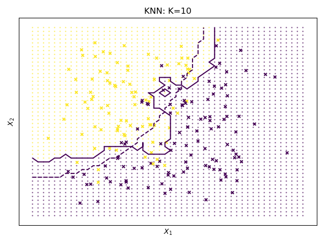
Figure 14: The firm line indicates the KNN decision boundary on the data from figure 13, using \(K = 10\). The Bayes decision boundary is shown as a dashed line. The KNN and Bayes decision boundaries are very similar.

Figure 15: A comparison of the KNN decision boundaries (solid curves) obtained using \(K=1\) and \(K=100\) on the data from figure 13. With \(K=1\), the decision boundary is overly flexible, while with \(K=100\) it is not sufficiently flexible. The Bayes decision boundary is shown as dashed line.
In figure 16 we have plotted the KNN test and training errors as a function of \(\frac{1}{K}\). As \(\frac{1}{K}\) increases, the method becomes more flexible. As in the regression setting, the training error rate consistently declines as the flexibility increases. However, the test error exhibits the characteristic U-shape, declining at first (with a minimum at approximately \(K=10\)) before increasing again when the method becomes excessively flexible and overfits.

Figure 16: The KNN training error rate (blue, 200 observations) and test error rate (orange, 5,000 observations) on the data from figure 13 as the level of flexibility (assessed using \(\frac{1}{K}\)) increases, or equivalently as the number of neighbors \(K\) decreases. The black dashed line indicates the Bayes error rate.
2.3 Lab: Introduction to Python
2.3.1 Basic Commands
In Python a list can be created by enclosing comma-separated elements by
square brackets. Length of a list can be obtained using len function.
x = [1, 3, 2, 5] print(len(x)) y = 3 z = 5 print(y + z)
4 8
To create an array of numbers, use array function in numpy library. numpy
functions can be used to perform element-wise operations on arrays.
import numpy as np x = np.array([[1, 2], [3, 4]]) y = np.array([6, 7, 8, 9]).reshape((2, 2)) print(x) print(y) print(x ** 2) print(np.sqrt(y))
[[1 2] [3 4]] [[6 7] [8 9]] [[ 1 4] [ 9 16]] [[2.44948974 2.64575131] [2.82842712 3. ]]
numpy.random has a number of functions to generate random variables that
follow a given distribution. Here we create two correlated sets of numbers, x
and y, and use numpy.corrcoef to calculate correlation between them.
import numpy as np np.random.seed(911) x = np.random.normal(size=50) y = x + np.random.normal(loc=50, scale=0.1, size=50) print(np.corrcoef(x, y)) print(np.corrcoef(x, y)[0, 1]) print(np.mean(x)) print(np.var(y)) print(np.std(y) ** 2)
[[1. 0.99374931] [0.99374931 1. ]] 0.9937493134584551 -0.020219724397254404 0.9330621750073689 0.9330621750073688
2.3.2 Graphics
matplotlib library has a number of functions to plot data in Python. It is
possible to view graphs on screen or save them in file for inclusion in a
document.
import numpy as np import matplotlib # only if we need to save figure in file matplotlib.use('Agg') # only to save figure in file import matplotlib.pyplot as plt x = np.random.normal(size=100) y = np.random.normal(size=100) plt.plot(x, y) plt.xlabel('This is x-axis') plt.ylabel('This is y-axis') plt.title('Plot of X vs Y') plt.savefig('xyPlot.png') # only to save figure in a file
numpy function linspace can be used to create a sequence between a start and
an end of a given length.
import numpy as np import matplotlib.pyplot as plt x = np.linspace(-np.pi, np.pi, num=50) y = x xx, yy = np.meshgrid(x, y) zz = np.cos(yy) / (1 + xx ** 2) plt.contour(xx, yy, zz) fig, ax = plt.subplots() zza = (zz - zz.T) / 2.0 CS = ax.contour(xx, yy, zza) ax.clabel(CS, inline=1)
2.3.3 Indexing Data
To access elements of an array, specify indexes inside square brackets. It is
possible to access multiple rows and columns. shape method gives number of
rows followed by number of columns.
import numpy as np A = np.array(np.arange(1, 17)) A = A.reshape(4, 4, order='F') # column first, Fortran style print(A) print(A[1, 2]) print(A[(0,2),:][:,(1,3)]) print(A[range(0,3),:][:,range(1,4)]) print(A[range(0, 2), :]) print(A[:, range(0, 2)]) print(A[0,:]) print(A.shape)
[[ 1 5 9 13] [ 2 6 10 14] [ 3 7 11 15] [ 4 8 12 16]] 10 [ 5 15] [ 5 10 15] [[ 1 5 9 13] [ 2 6 10 14]] [[1 5] [2 6] [3 7] [4 8]] (4, 4)
2.3.4 Loading Data
pandas library provides read_csv function to read files with data in
rectangular shape.
import pandas as pd Auto = pd.read_csv('data/Auto.csv') print(Auto.head()) print(Auto.shape) print(Auto.columns)
mpg cylinders displacement ... year origin name
0 18.0 8 307.0 ... 70 1 chevrolet chevelle malibu
1 15.0 8 350.0 ... 70 1 buick skylark 320
2 18.0 8 318.0 ... 70 1 plymouth satellite
3 16.0 8 304.0 ... 70 1 amc rebel sst
4 17.0 8 302.0 ... 70 1 ford torino
[5 rows x 9 columns]
(397, 9)
Index(['mpg', 'cylinders', 'displacement', 'horsepower', 'weight',
'acceleration', 'year', 'origin', 'name'],
dtype='object')
To load data from an R library, use get_rdataset function from
statsmodels. This function seems to work only if the computer is connected to
the internet.
from statsmodels import datasets carseats = datasets.get_rdataset('Carseats', package='ISLR').data print(carseats.shape) print(carseats.columns)
(400, 11)
Index(['Sales', 'CompPrice', 'Income', 'Advertising', 'Population', 'Price',
'ShelveLoc', 'Age', 'Education', 'Urban', 'US'],
dtype='object')
2.3.5 Additional Graphical and Numerical Summaries
plot method can be directly applied to a pandas dataframe.
import pandas as pd Auto = pd.read_csv('data/Auto.csv') Auto.boxplot(column='mpg', by='cylinders', grid=False)
hist method can be applied to plot a histogram.
import pandas as pd Auto = pd.read_csv('data/Auto.csv') Auto.hist(column='mpg') Auto.hist(column='mpg', color='red') Auto.hist(column='mpg', color='red', bins=15)
For pairs plot, use scatter_matrix method in pandas.plotting.
import pandas as pd from pandas import plotting Auto = pd.read_csv('data/Auto.csv') plotting.scatter_matrix(Auto[['mpg', 'displacement', 'horsepower', 'weight', 'acceleration']])
On pandas dataframes, describe method produces a summary of each variable.
import pandas as pd Auto = pd.read_csv('data/Auto.csv') print(Auto.describe())
mpg cylinders ... year origin
count 397.000000 397.000000 ... 397.000000 397.000000
mean 23.515869 5.458438 ... 75.994962 1.574307
std 7.825804 1.701577 ... 3.690005 0.802549
min 9.000000 3.000000 ... 70.000000 1.000000
25% 17.500000 4.000000 ... 73.000000 1.000000
50% 23.000000 4.000000 ... 76.000000 1.000000
75% 29.000000 8.000000 ... 79.000000 2.000000
max 46.600000 8.000000 ... 82.000000 3.000000
[8 rows x 7 columns]
3 Linear Regression
3.1 Simple Linear Regression
Figure 17 displays the simple linear regression fit to the
Advertising data, where \(\hat{\beta_0} =\) 0.0475
and \(\hat{\beta_1} =\) 7.0326.

Figure 17: For the Advertising data, the least squares fit for the regression of sales onto TV is shown. The fit is found by minimizing the sum of squared errors. Each grey line represents an error, and the fit makes a compromise by averaging their squares. In this case a linear fit captures the essence of the relationship, although it is somewhat deficient in the left of the plot.
In figure 18, we have computed RSS for a number of values of
\(\beta_0\) and \(\beta_1\), using the advertising data with sales as the response
and TV as the predictor.

Figure 18: Contour and three-dimensional plots of the RSS on the Advertising data, using sales as the response and TV as the predictor. The red dots correspond to the least squares estimates \(\hat{\beta_0}\) and \(\hat{\beta_1}\).
The left-hand panel of figure 19 displays population regression line and least squares line for a simple simulated example. The red line in the left-hand panel displays the true relationship, \(f(X) = 2 + 3X\), while the blue line is the least squares estimate based on observed data. In the right-hand panel of figure 19 we have generated five different data sets from the model \(Y = 2 + 3X + \epsilon\) and plotted the corresponding five least squares lines.

Figure 19: A simulated data set. Left: The red line represents the true relationship, \(f(X) = 2 + 3X\), which is known as the population regression line. The blue line is the least squares line; it is the least squares estimate for \(f(X)\) based on the observed data, shown in grey circles. Right: The population regression line is again shown in red, and the least squares line in blue. In cyan, five least squares lines are shown, each computed on the basis of a separate random set of observations. Each least squares line is different, but on average, the least squares lines are quite close to the population regression line.
For Advertising data, table 1 provides details of the least squares model for the
regression of number of units sold on TV advertising budget.
| Coef. | Std.Err. | \(t\) | \(P > \mid t \mid\) | |
|---|---|---|---|---|
| Intercept | 7.0326 | 0.4578 | 15.3603 | 0.0 |
| TV | 0.0475 | 0.0027 | 17.6676 | 0.0 |
Next, in table 2, we report more information about the least squares model.
| Quantity | Value |
|---|---|
| Residual standard error | 3.259 |
| \(R^2\) | 0.612 |
| F-statistic | 312.145 |
3.2 Multiple Linear Regression
Table 3 shows results of two simple linear regressions, each of which uses a different advertising medium as a predictor. We find that a $1,000 increase in spending on radio advertising is associated with an increase in sales by around 202 units. A $1,000 increase in advertising spending on on newspapers increases sales by approximately 55 units.
| Coef. | Std.Err. | \(t\) | \(P > \mid t \mid\) | |
|---|---|---|---|---|
| Intercept | 9.312 | 0.563 | 16.542 | 0.0 |
| radio | 0.202 | 0.02 | 9.921 | 0.0 |
| Intercept | 12.351 | 0.621 | 19.876 | 0.0 |
| newspaper | 0.055 | 0.017 | 3.3 | 0.001 |
Figure 20 illustrates an example of the least squares fit to a toy data set with \(p = 2\) predictors.
Figure 20: In a three-dimensional setting, with two predictors and one response, the least squares regression line becomes a plane. The plane is chosen to minimize the sum of the squared vertical distances between each observation (shown in red) and the plane.
Table 4 displays multiple regression coefficient estimates when
TV, radio, and newspaper advertising budgets are used to predict product sales
using Advertising data.
| Coef. | Std.Err. | \(t\) | \(P > \mid t \mid\) | |
|---|---|---|---|---|
| Intercept | 2.939 | 0.312 | 9.422 | 0.0 |
| TV | 0.046 | 0.001 | 32.809 | 0.0 |
| radio | 0.189 | 0.009 | 21.893 | 0.0 |
| newspaper | -0.001 | 0.006 | -0.177 | 0.86 |
Table 5 shows the correlation matrix for the three predictor variables and response variable in table 4.
| TV | radio | newspaper | sales | |
|---|---|---|---|---|
| TV | 1.0 | 0.0548 | 0.0566 | 0.7822 |
| radio | 0.0548 | 1.0 | 0.3541 | 0.5762 |
| newspaper | 0.0566 | 0.3541 | 1.0 | 0.2283 |
| sales | 0.7822 | 0.5762 | 0.2283 | 1.0 |
| Quantity | Value |
|---|---|
| Residual standard error | 1.69 |
| \(R^2\) | 0.897 |
| F-statistic | 570.0 |
Figure 21 displays a three-dimensional plot of TV and radio
versus sales.

Figure 21: For the Advertising data, a linear regression fit to sales using TV and radio as predictors. From the pattern of the residuals, we can see that there is a pronounced non-linear relationship in the data. The positive residuals tend to lie along the 45-degree line, where TV and Radio budgets are split evenly. The negative residuals tend to lie away from this line, where budgets are more lopsided.
3.3 Other Considerations in the Regression Model
Credit data set displayed in figure 22 records balance
(average credit card debt for a number of individuals) as well as several
quantitative predictors: age, cards (number of credit cards), education
and rating (credit rating).

Figure 22: The Credit dataset contains information about balance, age, cards, education, income, limit, and rating for a number of potential customers.
Table 7 displays the coefficient estimates and other information
associated with the model where gender is the only explanatory variable.
| Coef. | Std.Err. | \(t\) | \(P > \mid t \mid\) | |
|---|---|---|---|---|
| Intercept | 509.803 | 33.128 | 15.389 | 0.0 |
| Gender[T.Female] | 19.733 | 46.051 | 0.429 | 0.669 |
From table 8 we see that the estimated balance for the
baseline, African American, is $531.0. It is estimated that the
Asian category will have an additional $-18.7 debt, and that the
Caucasian category will have an additional $-12.5 debt compared to
African American category.
| Coef. | Std.Err. | \(t\) | \(P > \mid t \mid\) | |
|---|---|---|---|---|
| Intercept | 531.0 | 46.319 | 11.464 | 0.0 |
| Ethnicity[T.Asian] | -18.686 | 65.021 | -0.287 | 0.774 |
| Ethnicity[T.Caucasian] | -12.503 | 56.681 | -0.221 | 0.826 |
Table 9 shows results of regressing sales and TV and radio
when an interaction term is included. Coefficient of interaction term
TV:radio is highly significant.
In figure 23, the left panel shows least squares lines when
we predict balance using income (quantitative) and student (qualitative
variables). There is no interaction term between income and student. The
right panel shows least squares lines when an interaction term is included.
| Coef. | Std.Err. | \(t\) | \(P > \mid t \mid\) | |
|---|---|---|---|---|
| Intercept | 6.75 | 0.248 | 27.233 | 0.0 |
| TV | 0.019 | 0.002 | 12.699 | 0.0 |
| radio | 0.029 | 0.009 | 3.241 | 0.001 |
| TV:radio | 0.001 | 0.0 | 20.727 | 0.0 |

Figure 23: For the Credit data, the least squares lines are shown for prediction of balance from income for students and non-students. Left: There is no interaction between income and student. Right: There is an interaction term between income and students.
Figure 24 shows a scatter plot of mpg (gas mileage in miles per
gallon) versus horsepower in the Auto data set. The figure also includes
least squares fit line for linear, second degree, and fifth degree polynomials
in horsepower.

Figure 24: The Auto data set. For a number of cars, mpg and horsepower are shown. The linear regression fit is shown in orange. The linear regression fit for a model that includes first- and second-order terms of horsepower is shown as blue curve. The linear regression fit for a model that includes all polynomials of horsepower up to fifth-degree is shown in green.
Table 10 shows regression results of a quadratic fit to explain
mpg as a function of horsepower and \(\mathttt{horsepower^2}\).
| Coef. | Std.Err. | \(t\) | \(P > \mid t \mid\) | |
|---|---|---|---|---|
| Intercept | 56.9001 | 1.8004 | 31.6037 | 0.0 |
| horsepower | -0.4662 | 0.0311 | -14.9782 | 0.0 |
| \(horsepower^2\) | 0.0012 | 0.0001 | 10.0801 | 0.0 |
The left panel of figure 25 displays a residual plot from the
linear regression of mpg onto horsepower on the Auto data set. The red
line is a smooth fit to the residuals, which is displayed in order to make it
easier to identify any trends. The residuals exhibit a clear U-shape, which
strongly suggests non-linearity in the data. In contrast, the right hand panel
of figure25 displays the residual plot results from the model
which contains a quadratic term in horsepower. Now there is little pattern in
residuals, suggesting that the quadratic term improves the fit to the data.

Figure 25: Plots of residuals versus predicted (or fitted) values for the Auto data set. In each plot, the red line is a smooth fit to the residuals, intended to make it easier to identify a trend. Left: A linear regression of mpg on horsepower. A strong pattern in the residuals indicates non-linearity in the data. Right: A linear regression of mpg on horsepower and square of horsepower. Now there is little pattern in the residuals.
Figure 26 provides an illustration of correlations among residuals. In the top panel, we see the residuals from a linear regression fit to data generated with uncorrelated errors. There is no evidence of time-related trend in the residuals. In contrast, the residuals in the bottom panel are from a data set in which adjacent errors had a correlation of 0.9. Now there is a clear pattern in the residuals - adjacent residuals tend to take on similar values. Finally, the center panel illustrates a more moderate case in which the residuals had a correlation of 0.5. There is still evidence of tracking, but the pattern is less pronounced.

Figure 26: Plots of residuals from simulated time series data sets generated with differeing levels of correlation \(\rho\) between error terms for adjacent time points.
In the left-hand panel of figure 27, the magnitude of the residuals tends to increase with the fitted values. The right hand panel displays residual plot after transforming the response using \(\log(Y)\). The residuals now appear to have constant variance, although there is some evidence of a non-linear relationship in the data.
Figure 27: Residual plots. The red line, a smooth fit to the residuals, is intended to make it easier to identify a trend. The blue lines track \(5^{th}\) and \(95^{th}\) percentiles of the residuals, and emphasize patterns. Left: The funnel shape indicates heteroscedasticity. Right: the response has been log transformed, and now there is no evidence of heteroscedasticity.
The red point (observation 20) in the left hand panel of figure 28 illustrates a typical outlier. The red solid line is the least squares regression fit, while the blue dashed line is the least squares fit after removal of the outlier. In this case, removal of outlier has little effect on the least squares line. In the center panel of figure 28, the outlier is clearly visible. In practice, to decide if the outlier is sufficiently big to be considered an outlier, we can plot studentized residuals, computed by dividing each residual \(\epsilon_i\) by its estimated standard error. These are shown in the right hand panel.

Figure 28: Left: The least squares regression line is shown in red. The regression line after removing the outlier is is shown in blue. Center: The residual plot clearly identifies the outlier. Right: The outlier has a studentized residual of 6; typically we expect values between -3 and 3.
Observation 41 in the left-hand panel in figure 29 has high leverage, in that the predictor value for this observation is large relative to the other observations. The data displayed in figure 29 are the same as the data displayed in figure 28, except for the addition of a single high leverage observation1. The red solid line is the least squares fit to the data, while the blue dashed line is the fit produced when observation 41 is removed. Comparing the left-hand panels of figures 28 and 29, we observe that removing the high leverage observation has a much more substantial impact on least squares line than removing the outlier. The center panel of figure 29, for a data set with two predictors \(X_1\) and \(X_2\). While most of the observations' predictor values fall within the region of blue dashed lines, the red observation is well outside this range. But neither the value for \(X_1\) nor the value for \(X_2\) is unusual. So if we examine just \(X_1\) or \(X_2\), we will not notice this high leverage point. The right-panel of figure 29 provides a plot of studentized residuals versus \(h_i\) for the data in the left hand panel. Observation 41 stands out as having a very high leverage statistic as well as a high studentized residual.

Figure 29: Left: Observation 41 is a high leverage point, while 20 is not. The red line is the fit to all the data, and the blue line is the fit with observation 41 removed. Center: The red observation is not unusual in terms of its \(X_1\) value or its \(X_2\) value, but still falls outside the bulk of the data, and hence has high leverage. Right: Observation 41 has a high leverage and a high residual.
Figure 30 illustrates the concept of collinearity.

Figure 30: Scatter plots of the observations from the Credit data set. Left: A plot of age versus limit. These two variables not collinear. Right: A plot of rating versus limit. There is high collinearity.
Figure 31 illustrates some of the difficulties that can result
from collinearity. The left panel is a contour plot of the RSS associated with
different possible coefficient estimates for the regression of balance on
limit and age. Each ellipse represents a set of coefficients that
correspond to the same RSS, with ellipses nearest to the center taking on the
lowest values of RSS. The black dot and the associated dashed lines represent
the coefficient estimates that result in the smallest possible RSS. The axes
for limit and age have been scaled so that the plot includes possible
coefficients that are up to four standard errors on either side of the least
squares estimates. We see that the true limit coefficient is almost certainly
between 0.15 and 0.20.
In contrast, the right hand panel of figure 31 displays contour
plots of the RSS associated with possible coefficient estimates for the
regression of balance onto limit and rating, which we know to be highly
collinear. Now the contours run along a narrow valley; there is a broad range
of values for the coefficient estimates that result in equal values for RSS.
Figure 31: Contour plots for the RSS values as a function of the parameters \(\beta\) for various regressions involving the Credit data set. In each plot, the black dots represent the coefficient values corresponding to the minimum RSS. Left: A contour plot of RSS for the regression of balance onto age and limit. The minimum value is well defined. Right: A contour plot of RSS for the regression of balance onto rating and limit. Because of the collinearity, there are many pairs \((\beta_{Limit}, \beta_{Rating})\) with a similar value for RSS.
Table 11 compares the coefficient estimates obtained from two
separate multiple regression models. The first is a regression of balance on
age and limit. The second is a regression of balance on rating and
limit. In the first regression, both age and limit are highly significant
with very small p-values. In the second, the collinearity between limit and
rating has caused the standard error for the limit coefficient to increase
by a factor of 12 and the p-value to increase to 0.701. In other words, the
importance of the limit variable has been masked due to the presence of
collinearity.
| Coef. | Std.Err. | \(t\) | \(P > \mid t \mid\) | |
|---|---|---|---|---|
| Intercept | -173.411 | 43.828 | -3.957 | 0.0 |
| Age | -2.291 | 0.672 | -3.407 | 0.001 |
| Limit | 0.173 | 0.005 | 34.496 | 0.0 |
| Intercept | -377.537 | 45.254 | -8.343 | 0.0 |
| Rating | 2.202 | 0.952 | 2.312 | 0.021 |
| Limit | 0.025 | 0.064 | 0.384 | 0.701 |
3.4 The Marketing Plan
3.5 Comparison of Linear Regression with K-Nearest Neighbors
Figure 32 illustrates two KNN fits on a data set with \(p = 2\) predictors. The fit with \(K = 1\) is shown in the left-hand panel, while the right-hand panel displays the fit with \(K = 9\). When \(K = 1\), the KNN fit perfectly interpolates the training observations, and consequently takes the form of a step function. When \(K = 9\), the KNN fit is still a step function, but averaging over nine observations results in much smaller regions of constant prediction, and consequently a smoother fit.

Figure 32: Plots of \(\hat{f}(X)\) using KNN regression on two-dimensional data set with 64 observations (brown dots). Left: \(K = 1\) results in a rough step function fit. Right: \(K = 9\) produces a much smoother fit.
Figure 33 provides an example of KNN regression with data generated from a one-dimensional regression model. the black dashed lines represent \(f(X)\), while the blue curves correspond to the KNN fits using \(K = 1\) and \(K = 9\). In this case, the \(K = 1\) predictions are far too variable, while the smoother \(K = 9\) fit is much closer to \(f(X)\).
Figure 33: Plots of \(\hat{f}(X)\) using KNN regression on a one-dimensional data set with 50 observations. The true relationship is given by the black dashed line. Left: The blue curve corresponds to \(K = 1\) and interpolates (i.e., passes directly through) training data. Right: The blue curve corresponds to \(K = 9\), and represents a smoother fit.
Figure 34 represents the linear regression fit to the same data. It is almost perfect. The right hand panel of figure 34 reveals that linear regression outperforms KNN for this data. The green line, plotted as a function of \(\frac{1}{K}\), represents the test set mean squared error (MSE) for KNN. The KNN errors are well above the horizontal dashed line, which is the test MSE for linear regression.

Figure 34: The same data set shown in figure 33 is investigated further. Left: The blue dashed line is the least squares fit to the data. Since \(f(X)\) is in fact linear (displayed in black line), the least squares regression line provides a very good estimate of \(f(X)\). Right: The dashed horizontal line represents the least squares test set MSE, while the green line corresponds to the MSE for KNN as a function of \(\frac{1}{K}\). Linear regression achieves a lower test MSE than does KNN regression, since \(f(X)\) is in fact linear.
Figure 35 examines the relative performances of least squares regression and KNN under increasing levels of non-linearity in the relationship between \(X\) and \(Y\). In the top row, the true relationship is nearly linear. In this case, we see that the test MSE for linear regression is still superior to that of KNN for low values of \(K\) (far right). However, as \(K\) increases, KNN outperforms linear regression. The second row illustrates a more substantial deviation from linearity. In this situation, KNN substantially outperforms linear regression for all values of \(K\).

Figure 35: Top Left: In a setting with a slightly non-linear relationship between \(X\) and \(Y\) (solid black line), the KNN fits with \(K = 1\) (blue) and \(K = 9\) (red) are displayed. Top Right: For the slightly non-linear data,the test set MSE for least squares regression (horizontal) and KNN with various values of \(\frac{1}{K}\) (green) are displayed. Bottom Left and Bottom Right: As in the top panel, but with a strongly non-linear relationship between \(X\) and \(Y\).
Figure 36 considers the same strongly non-linear situation as in the lower panel of figure 35, except that we have added additional noise predictors that are not associated with the response. When \(p = 1\) or \(p = 2\), KNN outperforms linear regression. But as we increase \(p\), linear regression becomes superior to KNN. In fact, increase in dimensionality has only caused a small increase in linear regression test set MSE, but it has caused a much bigger increase in the MSE for KNN.

Figure 36: Test MSE for linear regressions (black horizontal lines) and KNN (green curves) as the number of variables \(p\) increases. The true function is non-linear in the first variable, as in the lower panel in figure 35, and does not depend upon the additional variables. The performance of linear regression deteriorates slowly in the presense of these additional variables, whereas KNN's performance degrades more quickly as \(p\) increases.
3.6 Lab: Linear Regression
3.6.1 Libraries
The import function, along with an optional as, is used to load libraries.
Before a library can be loaded, it must be installed on the system.
import numpy as np import statsmodels.formula.api as smf
3.6.2 Simple Linear Regression
We load Boston data set from R library MASS. Then we use ols function
from statsmodels.formula.api to fit simple linear regression model, with
medv as response and lstat as the predictor.
Function summary2() gives some basic information about the model. We can use
dir() to find out what other pieces of information are stored in lm_fit.
The predict() function can be used to produce prediction of medv for a given
value of lstat.
import statsmodels.formula.api as smf from statsmodels import datasets boston = datasets.get_rdataset('Boston', 'MASS').data print(boston.columns) print('--------') lm_reg = smf.ols(formula='medv ~ lstat', data=boston) lm_fit = lm_reg.fit() print(lm_fit.summary2()) print('------') print(dir(lm_fit)) print('------') print(lm_fit.predict(exog=dict(lstat=[5, 10, 15])))
Index(['crim', 'zn', 'indus', 'chas', 'nox', 'rm', 'age', 'dis', 'rad', 'tax',
'ptratio', 'black', 'lstat', 'medv'],
dtype='object')
--------
Results: Ordinary least squares
==================================================================
Model: OLS Adj. R-squared: 0.543
Dependent Variable: medv AIC: 3286.9750
Date: 2019-05-28 14:10 BIC: 3295.4280
No. Observations: 506 Log-Likelihood: -1641.5
Df Model: 1 F-statistic: 601.6
Df Residuals: 504 Prob (F-statistic): 5.08e-88
R-squared: 0.544 Scale: 38.636
-------------------------------------------------------------------
Coef. Std.Err. t P>|t| [0.025 0.975]
-------------------------------------------------------------------
Intercept 34.5538 0.5626 61.4151 0.0000 33.4485 35.6592
lstat -0.9500 0.0387 -24.5279 0.0000 -1.0261 -0.8740
------------------------------------------------------------------
Omnibus: 137.043 Durbin-Watson: 0.892
Prob(Omnibus): 0.000 Jarque-Bera (JB): 291.373
Skew: 1.453 Prob(JB): 0.000
Kurtosis: 5.319 Condition No.: 30
==================================================================
------
['HC0_se', 'HC1_se', 'HC2_se', 'HC3_se', '_HCCM', '__class__', '__delattr__',
'__dict__', '__dir__', '__doc__', '__eq__', '__format__', '__ge__',
'__getattribute__', '__gt__', '__hash__', '__init__', '__init_subclass__',
'__le__', '__lt__', '__module__', '__ne__', '__new__', '__reduce__',
'__reduce_ex__', '__repr__', '__setattr__', '__sizeof__', '__str__',
'__subclasshook__', '__weakref__', '_cache', '_data_attr',
'_get_robustcov_results', '_is_nested', '_wexog_singular_values', 'aic',
'bic', 'bse', 'centered_tss', 'compare_f_test', 'compare_lm_test',
'compare_lr_test', 'condition_number', 'conf_int', 'conf_int_el', 'cov_HC0',
'cov_HC1', 'cov_HC2', 'cov_HC3', 'cov_kwds', 'cov_params', 'cov_type',
'df_model', 'df_resid', 'eigenvals', 'el_test', 'ess', 'f_pvalue', 'f_test',
'fittedvalues', 'fvalue', 'get_influence', 'get_prediction',
'get_robustcov_results', 'initialize', 'k_constant', 'llf', 'load', 'model',
'mse_model', 'mse_resid', 'mse_total', 'nobs', 'normalized_cov_params',
'outlier_test', 'params', 'predict', 'pvalues', 'remove_data', 'resid',
'resid_pearson', 'rsquared', 'rsquared_adj', 'save', 'scale', 'ssr',
'summary', 'summary2', 't_test', 't_test_pairwise', 'tvalues',
'uncentered_tss', 'use_t', 'wald_test', 'wald_test_terms', 'wresid']
------
0 29.803594
1 25.053347
2 20.303101
dtype: float64
We will now plot medv and lstat along with least squares regression line.
import statsmodels.formula.api as smf from statsmodels import datasets boston = datasets.get_rdataset('Boston', 'MASS').data print(boston.columns) print('--------') lm_reg = smf.ols(formula='medv ~ lstat', data=boston) lm_fit = lm_reg.fit() print(lm_fit.summary2()) print('------') print(dir(lm_fit)) print('------') print(lm_fit.predict(exog=dict(lstat=[5, 10, 15]))) import statsmodels.api as sm import matplotlib.pyplot as plt fig = plt.figure() ax = fig.add_subplot(111) boston.plot(x='lstat', y='medv', alpha=0.7, ax=ax) sm.graphics.abline_plot(model_results=lm_fit, ax=ax, c='r')
Next we examine some diagnostic plots.
import statsmodels.formula.api as smf from statsmodels import datasets boston = datasets.get_rdataset('Boston', 'MASS').data print(boston.columns) print('--------') lm_reg = smf.ols(formula='medv ~ lstat', data=boston) lm_fit = lm_reg.fit() print(lm_fit.summary2()) print('------') print(dir(lm_fit)) print('------') print(lm_fit.predict(exog=dict(lstat=[5, 10, 15]))) import statsmodels.api as sm from statsmodels.nonparametric.smoothers_lowess import lowess import matplotlib.pyplot as plt import numpy as np fig = plt.figure() ax1 = fig.add_subplot(221) ax1.scatter(lm_fit.fittedvalues, lm_fit.resid, s=5, c='b', alpha=0.6) ax1.axhline(y=0, linestyle='--', c='r') # resid_lowess_fit = lowess(endog=lm_fit.resid, exog=lm_fit.fittedvalues, # is_sorted=True) # ax1.plot(resid_lowess_fit[:,0], resid_lowess_fit[:,1]) ax1.set_xlabel('Fitted values') ax1.set_ylabel('Residuals') ax1.set_title('Residuals vs Fitted') ax2=fig.add_subplot(222) sm.graphics.qqplot(lm_fit.resid, ax=ax2, markersize=3, line='s', linestyle='--', fit=True, alpha=0.4) ax2.set_ylabel('Standardized residuals') ax2.set_title('Normal Q-Q') influence = lm_fit.get_influence() standardized_resid = influence.resid_studentized_internal ax3 = fig.add_subplot(223) ax3.scatter(lm_fit.fittedvalues, np.sqrt(np.abs(standardized_resid)), s=5, alpha=0.4, c='b') ax3.set_xlabel('Fitted values') ax3.set_ylabel(r'$\sqrt{\mid Standardized\; residuals \mid}$') ax3.set_title('Scale-Location') ax4 = fig.add_subplot(224) sm.graphics.influence_plot(lm_fit, size=2, alpha=0.4, c='b', ax=ax4) ax4.xaxis.label.set_size(10) ax4.yaxis.label.set_size(10) ax4.title.set_size(12) ax4.set_xlim(0, 0.03) for txt in ax4.texts: txt.set_visible(False) ax4.axhline(y=0, linestyle='--', color='grey') fig.tight_layout()
3.6.3 Multiple Linear Regression
In order to fit a multiple regression model using least squares, we again use
the ols and fit functions. The syntax ols(formula='y ~ x1 + x2 + x3') is
used to fit a model with three predictors, x1, x2, and x3. The
summary2() now outputs the regression coefficients for all three predictors.
statsmodels does not seem to have R like facility to include all variables
using the formula y ~ .. To include all variables, we either write them
individually, or use code to create a formula.
import statsmodels.formula.api as smf from statsmodels import datasets boston = datasets.get_rdataset('Boston', 'MASS').data lm_reg = smf.ols(formula='medv ~ lstat + age', data=boston) lm_fit = lm_reg.fit() print(lm_fit.summary2()) print('--------') # Create formula to include all variables all_columns = list(boston.columns) all_columns.remove('medv') my_formula = 'medv ~ ' + ' + '.join(all_columns) print(my_formula) print('--------') all_reg = smf.ols(formula=my_formula, data=boston) all_fit = all_reg.fit() print(all_fit.summary2()) print('--------')
Results: Ordinary least squares
==================================================================
Model: OLS Adj. R-squared: 0.549
Dependent Variable: medv AIC: 3281.0064
Date: 2019-05-29 10:07 BIC: 3293.6860
No. Observations: 506 Log-Likelihood: -1637.5
Df Model: 2 F-statistic: 309.0
Df Residuals: 503 Prob (F-statistic): 2.98e-88
R-squared: 0.551 Scale: 38.108
-------------------------------------------------------------------
Coef. Std.Err. t P>|t| [0.025 0.975]
-------------------------------------------------------------------
Intercept 33.2228 0.7308 45.4579 0.0000 31.7869 34.6586
lstat -1.0321 0.0482 -21.4163 0.0000 -1.1267 -0.9374
age 0.0345 0.0122 2.8256 0.0049 0.0105 0.0586
------------------------------------------------------------------
Omnibus: 124.288 Durbin-Watson: 0.945
Prob(Omnibus): 0.000 Jarque-Bera (JB): 244.026
Skew: 1.362 Prob(JB): 0.000
Kurtosis: 5.038 Condition No.: 201
==================================================================
--------
medv ~ crim + zn + indus + chas + nox + rm + age + dis + rad + tax +
ptratio + black + lstat
--------
Results: Ordinary least squares
==================================================================
Model: OLS Adj. R-squared: 0.734
Dependent Variable: medv AIC: 3025.6086
Date: 2019-05-29 10:07 BIC: 3084.7801
No. Observations: 506 Log-Likelihood: -1498.8
Df Model: 13 F-statistic: 108.1
Df Residuals: 492 Prob (F-statistic): 6.72e-135
R-squared: 0.741 Scale: 22.518
-------------------------------------------------------------------
Coef. Std.Err. t P>|t| [0.025 0.975]
-------------------------------------------------------------------
Intercept 36.4595 5.1035 7.1441 0.0000 26.4322 46.4868
crim -0.1080 0.0329 -3.2865 0.0011 -0.1726 -0.0434
zn 0.0464 0.0137 3.3816 0.0008 0.0194 0.0734
indus 0.0206 0.0615 0.3343 0.7383 -0.1003 0.1414
chas 2.6867 0.8616 3.1184 0.0019 0.9939 4.3796
nox -17.7666 3.8197 -4.6513 0.0000 -25.2716 -10.2616
rm 3.8099 0.4179 9.1161 0.0000 2.9887 4.6310
age 0.0007 0.0132 0.0524 0.9582 -0.0253 0.0266
dis -1.4756 0.1995 -7.3980 0.0000 -1.8675 -1.0837
rad 0.3060 0.0663 4.6129 0.0000 0.1757 0.4364
tax -0.0123 0.0038 -3.2800 0.0011 -0.0197 -0.0049
ptratio -0.9527 0.1308 -7.2825 0.0000 -1.2098 -0.6957
black 0.0093 0.0027 3.4668 0.0006 0.0040 0.0146
lstat -0.5248 0.0507 -10.3471 0.0000 -0.6244 -0.4251
------------------------------------------------------------------
Omnibus: 178.041 Durbin-Watson: 1.078
Prob(Omnibus): 0.000 Jarque-Bera (JB): 783.126
Skew: 1.521 Prob(JB): 0.000
Kurtosis: 8.281 Condition No.: 15114
==================================================================
* The condition number is large (2e+04). This might indicate
strong multicollinearity or other numerical problems.
--------
3.6.4 Interaction Terms
The syntax lstat:black tells ols to include an interaction term between
lstat and black. The syntax lstat*age simultaneously includes lstat,
age, and the interaction term \(\text{lstat} \times \text{age}\) as predictors.
It is a shorthand for lstat + age + lstat:age.
import statsmodels.formula.api as smf from statsmodels import datasets boston = datasets.get_rdataset('Boston', 'MASS').data my_reg = smf.ols(formula='medv ~ lstat * age', data=boston) my_fit = my_reg.fit() print(my_fit.summary2())
Results: Ordinary least squares
==================================================================
Model: OLS Adj. R-squared: 0.553
Dependent Variable: medv AIC: 3277.9547
Date: 2019-05-29 11:48 BIC: 3294.8609
No. Observations: 506 Log-Likelihood: -1635.0
Df Model: 3 F-statistic: 209.3
Df Residuals: 502 Prob (F-statistic): 4.86e-88
R-squared: 0.556 Scale: 37.804
-------------------------------------------------------------------
Coef. Std.Err. t P>|t| [0.025 0.975]
-------------------------------------------------------------------
Intercept 36.0885 1.4698 24.5528 0.0000 33.2007 38.9763
lstat -1.3921 0.1675 -8.3134 0.0000 -1.7211 -1.0631
age -0.0007 0.0199 -0.0363 0.9711 -0.0398 0.0383
lstat:age 0.0042 0.0019 2.2443 0.0252 0.0005 0.0078
------------------------------------------------------------------
Omnibus: 135.601 Durbin-Watson: 0.965
Prob(Omnibus): 0.000 Jarque-Bera (JB): 296.955
Skew: 1.417 Prob(JB): 0.000
Kurtosis: 5.461 Condition No.: 6878
==================================================================
* The condition number is large (7e+03). This might indicate
strong multicollinearity or other numerical problems.
3.6.5 Non-linear Transformations of the Predictors
The ols function can also accommodate non-linear transformations of the
predictors. For example, given a predictor \(X\), we can create predictor \(X^2\)
using I(X ** 2). We now perform a regression of medv onto lstat and
\(\texttt{lstat}^2\).
The near-zero p-value associated with the quadratic term suggests that it leads
to an improve model. We use anova_lm() function to further quantify the
extent to which the quadratic fit is superior to the linear fit. The null
hypothesis is that the two models fit the data equally well. The alternative
hypothesis is that the full model is superior. Given the large F-statistic and
zero p-value, this provides very clear evidence that the model with quadratic
term is superior. A plot of residuals versus fitted values shows that, with
quadratic term included, there is no discernible pattern in residuals.
import statsmodels.formula.api as smf from statsmodels import datasets import statsmodels.api as sm lowess = sm.nonparametric.lowess import matplotlib.pyplot as plt boston = datasets.get_rdataset('Boston', 'MASS').data my_reg = smf.ols(formula='medv ~ lstat', data=boston) my_fit = my_reg.fit() my_reg2 = smf.ols(formula='medv ~ lstat + I(lstat ** 2)', data=boston) my_fit2 = my_reg2.fit() print(my_fit.summary2()) print('--------') print(sm.stats.anova_lm(my_fit2)) print('--------') print(sm.stats.anova_lm(my_fit, my_fit2)) my_regs = (my_reg, my_reg2) fig = plt.figure(figsize=(8,4)) i_reg = 1 for reg in my_regs: ax = fig.add_subplot(1, 2, i_reg) fit = reg.fit() ax.scatter(fit.fittedvalues, fit.resid, s=7, alpha=0.6) lowess_fit = lowess(fit.resid, fit.fittedvalues) ax.plot(lowess_fit[:,0], lowess_fit[:,1], c='r') ax.axhline(y=0, linestyle='--', color='grey') ax.set_xlabel('Fitted values') ax.set_ylabel('Residuals') ax.set_title(reg.formula) i_reg += 1 fig.tight_layout()
Results: Ordinary least squares
==================================================================
Model: OLS Adj. R-squared: 0.543
Dependent Variable: medv AIC: 3286.9750
Date: 2019-05-29 12:41 BIC: 3295.4280
No. Observations: 506 Log-Likelihood: -1641.5
Df Model: 1 F-statistic: 601.6
Df Residuals: 504 Prob (F-statistic): 5.08e-88
R-squared: 0.544 Scale: 38.636
-------------------------------------------------------------------
Coef. Std.Err. t P>|t| [0.025 0.975]
-------------------------------------------------------------------
Intercept 34.5538 0.5626 61.4151 0.0000 33.4485 35.6592
lstat -0.9500 0.0387 -24.5279 0.0000 -1.0261 -0.8740
------------------------------------------------------------------
Omnibus: 137.043 Durbin-Watson: 0.892
Prob(Omnibus): 0.000 Jarque-Bera (JB): 291.373
Skew: 1.453 Prob(JB): 0.000
Kurtosis: 5.319 Condition No.: 30
==================================================================
--------
df sum_sq mean_sq F PR(>F)
lstat 1.0 23243.913997 23243.913997 761.810354 8.819026e-103
I(lstat ** 2) 1.0 4125.138260 4125.138260 135.199822 7.630116e-28
Residual 503.0 15347.243158 30.511418 NaN NaN
--------
df_resid ssr df_diff ss_diff F Pr(>F)
0 504.0 19472.381418 0.0 NaN NaN NaN
1 503.0 15347.243158 1.0 4125.13826 135.199822 7.630116e-28
3.6.6 Qualitative Predictors
We will now examine Carseats data, which is part of the ISLR library. We
will attempt to predict Sales (child car seat sales) based on a number of
predictors. statsmodels automatically converts string variables into
categorical variables. If we want statsmodels to treat a numerical variable x as
qualitative predictor, the formula should be y ~ C(x). Here C() stands for
categorical.
import statsmodels.formula.api as smf from statsmodels import datasets carseats = datasets.get_rdataset('Carseats', 'ISLR').data print(carseats.columns) print('--------') all_columns = list(carseats.columns) all_columns.remove('Sales') my_formula = 'Sales ~ ' + ' + '.join(all_columns) my_formula += ' + Income:Advertising + Price:Age' print(my_formula) print('--------') my_reg = smf.ols(formula=my_formula, data=carseats) my_fit = my_reg.fit() print(my_fit.summary2())
Index(['Sales', 'CompPrice', 'Income', 'Advertising', 'Population', 'Price',
'ShelveLoc', 'Age', 'Education', 'Urban', 'US'],
dtype='object')
--------
Sales ~ CompPrice + Income + Advertising + Population + Price + ShelveLoc +
Age + Education + Urban + US + Income:Advertising + Price:Age
--------
Results: Ordinary least squares
====================================================================
Model: OLS Adj. R-squared: 0.872
Dependent Variable: Sales AIC: 1157.3378
Date: 2019-05-29 12:53 BIC: 1213.2183
No. Observations: 400 Log-Likelihood: -564.67
Df Model: 13 F-statistic: 210.0
Df Residuals: 386 Prob (F-statistic): 6.14e-166
R-squared: 0.876 Scale: 1.0213
--------------------------------------------------------------------
Coef. Std.Err. t P>|t| [0.025 0.975]
--------------------------------------------------------------------
Intercept 6.5756 1.0087 6.5185 0.0000 4.5922 8.5589
ShelveLoc[T.Good] 4.8487 0.1528 31.7243 0.0000 4.5482 5.1492
ShelveLoc[T.Medium] 1.9533 0.1258 15.5307 0.0000 1.7060 2.2005
Urban[T.Yes] 0.1402 0.1124 1.2470 0.2132 -0.0808 0.3612
US[T.Yes] -0.1576 0.1489 -1.0580 0.2907 -0.4504 0.1352
CompPrice 0.0929 0.0041 22.5668 0.0000 0.0848 0.1010
Income 0.0109 0.0026 4.1828 0.0000 0.0058 0.0160
Advertising 0.0702 0.0226 3.1070 0.0020 0.0258 0.1147
Population 0.0002 0.0004 0.4329 0.6653 -0.0006 0.0009
Price -0.1008 0.0074 -13.5494 0.0000 -0.1154 -0.0862
Age -0.0579 0.0160 -3.6329 0.0003 -0.0893 -0.0266
Education -0.0209 0.0196 -1.0632 0.2884 -0.0594 0.0177
Income:Advertising 0.0008 0.0003 2.6976 0.0073 0.0002 0.0013
Price:Age 0.0001 0.0001 0.8007 0.4238 -0.0002 0.0004
--------------------------------------------------------------------
Omnibus: 1.281 Durbin-Watson: 2.047
Prob(Omnibus): 0.527 Jarque-Bera (JB): 1.147
Skew: 0.129 Prob(JB): 0.564
Kurtosis: 3.050 Condition No.: 130576
====================================================================
* The condition number is large (1e+05). This might indicate
strong multicollinearity or other numerical problems.
3.6.7 Calling R from Python
4 Classification
4.1 An Overview of Classification
In figure 37, we have plotted annual income and monthly
credit card balance for a subset of individuals in Credit data set. The
left hand panel displays individuals who defaulted in brown, and those who did
not in blue. We have plotted only a fraction of individuals who did not
default. It appears that individuals who defaulted tended to have higher credit
card balances than those who did not. In the right hand panel, we show two
pairs of boxplots. The first shows the distribution of balance split by the
binary default variable; the second is a similar plot for income.

Figure 37: The Default data set. Left: The annual income and monthly credit card balances of a number of individuals. The individuals who defaulted on their credit card debt are shown in brown, and those who did not default are shown in blue. Center: Boxplots of balance as a function of default status. Right: Boxplots of income as a function of default status.
4.2 Why Not Linear Regression?
4.3 Logistic Regression
Using Default data set, in figure 38 we show probability of default as a function of
balance. The left panel shows a model fitted using linear regression. Some
of the probabilities estimates (for low balance) are outside the \([0, 1]\)
interval. The right panel shows a model fitted using logistic regression, which
models the probability of default as a function of balance. Now all
probability estimates are in the \([0, 1]\) interval.

Figure 38: Classification using Default data. Left: Estimated probability of default using linear regression. Some estimated probabilities are negative! The brown ticks indicate the 0/1 values coded for default (No or Yes). Right: Predicted probabilities of default using logistic regression. All probabilities lie between 0 and 1.
Table 12 shows the coefficient estimates and related
information that result from fitting a logistic regression model on the
Default data in order to predict the probability of default = Yes using balance.
| Coef. | Std.Err. | \(z\) | \(P > \mid z \mid\) | |
|---|---|---|---|---|
| Intercept | -10.6513 | 0.3612 | -29.4913 | 0.0 |
| balance | 0.0055 | 0.0002 | 24.9524 | 0.0 |
Table 13 shows the results of logistic model where default
is a function of the qualitative variable student.
Table 14 shows the coefficient estimates for a logistic
regression model that uses balance, income (in thousands of dollars), and
student status to predict probability of default.
| Coef. | Std.Err. | \(z\) | \(P > \mid z \mid\) | |
|---|---|---|---|---|
| Intercept | -3.5041 | 0.0707 | -49.5541 | 0.0 |
| student[T.Yes] | 0.4049 | 0.115 | 3.5202 | 0.0004 |
| Coef. | Std.Err. | \(z\) | \(P > \mid z \mid\) | |
|---|---|---|---|---|
| Intercept | -10.869 | 0.4923 | -22.0793 | 0.0 |
| student[T.Yes] | -0.6468 | 0.2363 | -2.7376 | 0.0062 |
| balance | 0.0057 | 0.0002 | 24.7365 | 0.0 |
| income | 0.003 | 0.0082 | 0.3698 | 0.7115 |
The left hand panel of figure 39 shows average default rates
for students and non-students, respectively, as a function of credit card
balance. For a fixed value of balance and income, a student is less
likely to default than a non-student. This is true for all values of balance.
This is consistent with negative coefficient of student in table
14. But the horizontal lines near the base of the plot, which show the default rates
for students and non-students averaged over all values of balance and
income, suggest the opposite effect: the overall student default rate is
higher than non-student default rate. Consequently, there is a positive
coefficient for student in the single variable logistic regression output
shown in table 13.

Figure 39: Confounding in the Default data. Left: Default rates are shown for students (brown) and non-students (blue). The solid lines display default rate as a function of balance, while the horizontal lines display the overall default rates. Right: Boxplots of balance for students and non-students are shown.
4.4 Linear Discriminant Analysis
In the left panel of figure 40, two normal density functions
that are displayed, \(f_1(x)\) and \(f_2(x)\), represent two distinct classes. The
Bayes classifier boundary, shown as vertical dashed line, is estimated using the
function GaussianNB(). The right hand panel displays a histogram of a random
sample of 20 observations from each class. The LDA decision boundary is shown
as firm vertical line.
Figure 40: Left: Two one-dimensional normal density functions are shown. The dashed vertical line represents the Bayes decision boundary. Right: 20 observations were drawn from each of the two classes, and are shown as histograms. The Bayes decision boundary is again shown as a dashed vertical line. The solid vertical line represents the LDA decision boundary estimated from the training data.
Two examples of multivariate Gaussian distributions with \(p = 2\) are shown in figure 41. In the upper panel, the height of the surface at any particular point represents the probability that both \(X_1\) and \(X_2\) fall in the small region around that point. If the surface is cut along the \(X_1\) axis or along the \(X_2\) axis, the resulting cross-section will have the shape of a one-dimensional normal distribution. The left-hand panel illustrates an example in which \(\text{var}(X_1) = \text{var}(X_2)\) and \(\text{cor}(X_1, X_2) = 0\); this surface has a characteristic bell shape. However, the bell shape will be distorted if the predictors are correlated or have unequal variances, as is illustrated in the right-hand panel of figure 41. In this situation, the base of the bell will have an elliptical, rather than circular, shape. The contour plots in the lower panel are not in the book.

Figure 41: Two multivariate Gaussian density functions are shown, with \(p = 2\). Left: The two predictors are uncorrelated. Right: The two predictors have a correlation of 0.7. The lower panel shows contour plots of the surfaces drawn in the upper panel. Here the correlations can be easily seen.
Figure 42 shows an example of three equally sized Gaussian classes with class-specific mean vectors and a common covariance matrix. The dashed lines are the Bayes decision boundaries.

Figure 42: An example with three classes. The observation from each class are drawn from a multivariate Gaussian distribution with \(p = 2\), with a class-specific mean vector and a common covariance matrix. Left: The dashed lines are the Bayes decision boundaries. Right: 20 observations were generated from each class, and the corresponding LDA decision boundaries are indicated using solid black lines. The Bayes decision boundaries are once again shown as dashed lines.
A confusion matrix, shown for the Default data in table
15, is a convenient way to display prediction of default in
comparison to true default. Table 16 shows the error rates
that result when we label any customer with a posterior probability of default
above 20% to the default class.
| true No | true Yes | Total | |
|---|---|---|---|
| predict No | 9645 | 254 | 9899 |
| predict Yes | 22 | 79 | 101 |
| Total | 9667 | 333 | 10000 |
| true No | true Yes | Total | |
|---|---|---|---|
| predict No | 9435 | 140 | 9575 |
| predict Yes | 232 | 193 | 425 |
| Total | 9667 | 333 | 10000 |
Figure 43 illustrates the trade-off that results from modifying the threshold value for the posterior probability of default. Various error rates are shown as a function of the threshold value. Using a threshold of 0.5 minimizes the overall error rate, shown as a black line. But when a threshold of 0.5 is used, the error rate among the individuals who default is quite high (blue dashed line). As the threshold is reduced, the error rate among individuals who default decreases steadily, but the error rate amond individuals who do not default increases.

Figure 43: For the Default data set, error rates are shown as a function of the threshold value for the posterior probability that is used to perform the assignment of default. The black sold line displays the overall error rate. The blue dashed line represents the fraction of defaulting customers that are incorrectly classified, and the orange dotted line indicates the fraction of errors among the non-defaulting customers.
Figure 44 displays the ROC curve for the LDA classifier on
the Default data set.

Figure 44: A ROC curve for the LDA classifier on the Default data. It traces two types of error as we vary the threshold value for the posterior probability of default. The actual thresholds are not shown. The true positive rate is the sensitivity: the fraction of defaulters that are correctly identified using a given threshold value. The false positive rate is the fraction of non-defaulters we incorrectly specify as defaulters, using the same threshold value. The ideal ROC curve hugs the top left corner, indicating a high true positive rate and a low false positive rate. The dotted line represents the ``no information'' classifier; this is what we would expect if student status and credit card balance are not associated with the probability of default.
Table 17 shows the possible results when applying a classifier (or diagnostic test) to a population.
| True class | ||||
|---|---|---|---|---|
| - or Null | + or Non-null | Total | ||
| Predicted | - or Null | True Negative (TN) | False Negative (FN) | N* |
| class | + or Non-null | False Positive (FP) | True Positive (TP) | P* |
| Total | N | P |
Table 18 lists many of the popular performance measures that are used in this context.
| Name | Definition | Synonyms |
|---|---|---|
| False Positive rate | FP / N | Type I error, 1 - specificity |
| True Positive rate | TP / P | 1 - Type II error, power, sensitivity, recall |
| Positive Predicted value | TP / P* | Precision, 1 - false discovery proportion |
| Negative Predicted value | TN / N* |
Figure 45 illustrates the performances of LDA and QDA in two scenarios. In the left-hand panel, the two Gaussian classes have a common correlation of 0.7 between \(X_1\) and \(X_2\). As a result, the Bayes decision boundary is nearly linear and is accurately approximated by the LDA decision boundary. In contrast, the right-hand panel displays a situation in which the orange class has a correlation of 0.7 between the variables and blue class has a correlation of -0.7.

Figure 45: Left: The Bayes (purple dashed), LDA (black dotted), and QDA (green sold) decision boundaries for a two-class problem with \(\Sigma_1 = \Sigma_2\). Right: Details are as given in the left-hand panel, except that \(\Sigma_1 \ne \Sigma_2\).
4.5 A Comparison of Classification Methods
Figure 46 illustrates the performances of the four classification approaches (KNN, LDA, Logistic, and QDA) when Bayes decision boundary is linear.

Figure 46: Boxplots of the test error rates for each of the linear scenarios described in the main text.
4.6 Lab: Logistic Regression, LDA, QDA, and KNN
4.6.1 The Stock Market Data
We will begin by examining some numerical and graphical summaries of the
Smarket data, which is part of the ISLR library.
from statsmodels import datasets import pandas as pd smarket = datasets.get_rdataset('Smarket', 'ISLR').data print(smarket.columns) print('--------') print(smarket.shape) print('--------') print(smarket.describe()) print('--------') print(smarket.iloc[:,1:8].corr()) print('--------') smarket.boxplot(column='Volume', by='Year', grid=False)
Index(['Year', 'Lag1', 'Lag2', 'Lag3', 'Lag4', 'Lag5', 'Volume', 'Today',
'Direction'],
dtype='object')
--------
(1250, 9)
--------
Year Lag1 ... Volume Today
count 1250.000000 1250.000000 ... 1250.000000 1250.000000
mean 2003.016000 0.003834 ... 1.478305 0.003138
std 1.409018 1.136299 ... 0.360357 1.136334
min 2001.000000 -4.922000 ... 0.356070 -4.922000
25% 2002.000000 -0.639500 ... 1.257400 -0.639500
50% 2003.000000 0.039000 ... 1.422950 0.038500
75% 2004.000000 0.596750 ... 1.641675 0.596750
max 2005.000000 5.733000 ... 3.152470 5.733000
[8 rows x 8 columns]
--------
Lag1 Lag2 Lag3 Lag4 Lag5 Volume Today
Lag1 1.000000 -0.026294 -0.010803 -0.002986 -0.005675 0.040910 -0.026155
Lag2 -0.026294 1.000000 -0.025897 -0.010854 -0.003558 -0.043383 -0.010250
Lag3 -0.010803 -0.025897 1.000000 -0.024051 -0.018808 -0.041824 -0.002448
Lag4 -0.002986 -0.010854 -0.024051 1.000000 -0.027084 -0.048414 -0.006900
Lag5 -0.005675 -0.003558 -0.018808 -0.027084 1.000000 -0.022002 -0.034860
Volume 0.040910 -0.043383 -0.041824 -0.048414 -0.022002 1.000000 0.014592
Today -0.026155 -0.010250 -0.002448 -0.006900 -0.034860 0.014592 1.000000
--------
4.6.2 Logistc Regression
Next, we will fit a logistic regression model to predict Direction using
Lag1 through Lag5 and Volume.
from statsmodels import datasets import statsmodels.formula.api as smf import numpy as np import pandas as pd smarket = datasets.get_rdataset('Smarket', 'ISLR').data smarket['direction_cat'] = smarket['Direction'].apply(lambda x: int(x=='Up')) logit_model = smf.logit( formula='direction_cat ~ Lag1 + Lag2 + Lag3 + Lag4 + Lag5 + Volume', data=smarket) logit_fit = logit_model.fit() print(logit_fit.summary2()) print('--------') print(dir(logit_fit)) # see what information is available from fit print('--------') print(logit_fit.params) # coefficients estimates print('--------') print(logit_fit.summary2().tables[1]) # coefficients estimates, std error, and z print('--------') print(logit_fit.summary2().tables[1].iloc[:,3]) # P > |z| column only print('--------') print(logit_fit.predict()[:10]) # probabilities for training data print('--------') smarket['predict_direction'] = np.vectorize( lambda x: 'Up' if x > 0.5 else 'Down')(logit_fit.predict()) print(pd.crosstab(smarket['predict_direction'], smarket['Direction']))
Optimization terminated successfully.
Current function value: 0.691034
Iterations 4
Results: Logit
================================================================
Model: Logit Pseudo R-squared: 0.002
Dependent Variable: direction_cat AIC: 1741.5841
Date: 2019-06-06 18:56 BIC: 1777.5004
No. Observations: 1250 Log-Likelihood: -863.79
Df Model: 6 LL-Null: -865.59
Df Residuals: 1243 LLR p-value: 0.73187
Converged: 1.0000 Scale: 1.0000
No. Iterations: 4.0000
-----------------------------------------------------------------
Coef. Std.Err. z P>|z| [0.025 0.975]
-----------------------------------------------------------------
Intercept -0.1260 0.2407 -0.5234 0.6007 -0.5978 0.3458
Lag1 -0.0731 0.0502 -1.4566 0.1452 -0.1714 0.0253
Lag2 -0.0423 0.0501 -0.8446 0.3984 -0.1405 0.0559
Lag3 0.0111 0.0499 0.2220 0.8243 -0.0868 0.1090
Lag4 0.0094 0.0500 0.1873 0.8514 -0.0886 0.1073
Lag5 0.0103 0.0495 0.2083 0.8350 -0.0867 0.1074
Volume 0.1354 0.1584 0.8553 0.3924 -0.1749 0.4458
================================================================
--------
['__class__', '__delattr__', '__dict__', '__dir__', '__doc__', '__eq__',
'__format__', '__ge__', '__getattribute__', '__getstate__', '__gt__',
'__hash__', '__init__', '__init_subclass__', '__le__', '__lt__',
'__module__', '__ne__', '__new__', '__reduce__', '__reduce_ex__', '__repr__',
'__setattr__', '__sizeof__', '__str__', '__subclasshook__', '__weakref__',
'_cache', '_data_attr', '_get_endog_name', '_get_robustcov_results', 'aic',
'bic', 'bse', 'conf_int', 'cov_kwds', 'cov_params', 'cov_type', 'df_model',
'df_resid', 'f_test', 'fittedvalues', 'get_margeff', 'initialize',
'k_constant', 'llf', 'llnull', 'llr', 'llr_pvalue', 'load', 'mle_retvals',
'mle_settings', 'model', 'nobs', 'normalized_cov_params', 'params',
'pred_table', 'predict', 'prsquared', 'pvalues', 'remove_data', 'resid_dev',
'resid_generalized', 'resid_pearson', 'resid_response', 'save', 'scale',
'set_null_options', 'summary', 'summary2', 't_test', 't_test_pairwise',
'tvalues', 'use_t', 'wald_test', 'wald_test_terms']
--------
Intercept -0.126000
Lag1 -0.073074
Lag2 -0.042301
Lag3 0.011085
Lag4 0.009359
Lag5 0.010313
Volume 0.135441
dtype: float64
--------
Coef. Std.Err. z P>|z| [0.025 0.975]
Intercept -0.126000 0.240737 -0.523394 0.600700 -0.597836 0.345836
Lag1 -0.073074 0.050168 -1.456583 0.145232 -0.171401 0.025254
Lag2 -0.042301 0.050086 -0.844568 0.398352 -0.140469 0.055866
Lag3 0.011085 0.049939 0.221974 0.824334 -0.086793 0.108963
Lag4 0.009359 0.049974 0.187275 0.851445 -0.088589 0.107307
Lag5 0.010313 0.049512 0.208296 0.834998 -0.086728 0.107354
Volume 0.135441 0.158361 0.855266 0.392404 -0.174941 0.445822
--------
Intercept 0.600700
Lag1 0.145232
Lag2 0.398352
Lag3 0.824334
Lag4 0.851445
Lag5 0.834998
Volume 0.392404
Name: P>|z|, dtype: float64
--------
[0.50708413 0.48146788 0.48113883 0.51522236 0.51078116 0.50695646
0.49265087 0.50922916 0.51761353 0.48883778]
--------
Direction Down Up
predict_direction
Down 145 141
Up 457 507
We now use data for years 2001 through 2004 to train the model, then use data for year 2005 to test the model.
from statsmodels import datasets import statsmodels.formula.api as smf import pandas as pd import numpy as np smarket = datasets.get_rdataset('Smarket', 'ISLR').data smarket['direction_cat'] = smarket['Direction'].apply(lambda x: int(x == 'Up')) smarket_train = smarket.loc[smarket['Year'] < 2005] smarket_test = smarket.loc[smarket['Year'] == 2005].copy() logit_model = smf.logit( formula='direction_cat ~ Lag1 + Lag2 + Lag3 + Lag4 + Lag5 + Volume', data=smarket_train) logit_fit = logit_model.fit() prob_up_test = logit_fit.predict(smarket_test) smarket_test.loc[:,'direction_predict'] = np.vectorize( lambda x: 'Up' if x > 0.5 else 'Down')(prob_up_test) confusion_test = \ pd.crosstab(smarket_test['direction_predict'], smarket_test['Direction']) print(confusion_test) print('--------') print(np.mean(np.mean(smarket_test['direction_predict'] == smarket_test['Direction']))) print('--------') # Refit logistic regression with only Lag1 and Lag2 logit_model = smf.logit('direction_cat ~ Lag1 + Lag2', data=smarket_train) logit_fit = logit_model.fit() prob_up_test = logit_fit.predict(smarket_test) smarket_test['direction_pred_2var'] = np.vectorize( lambda x: 'Up' if x > 0.5 else 'Down')(prob_up_test) print(pd.crosstab(smarket_test['direction_pred_2var'], smarket_test['Direction'])) print('--------') print(np.mean(smarket_test['direction_pred_2var'] == smarket_test['Direction'])) print('--------') print(logit_fit.predict(exog=dict(Lag1=[1.2,1.5], Lag2=[1.1,-0.8])))
Optimization terminated successfully.
Current function value: 0.691936
Iterations 4
Direction Down Up
direction_predict
Down 77 97
Up 34 44
--------
0.4801587301587302
--------
Optimization terminated successfully.
Current function value: 0.692085
Iterations 3
Direction Down Up
direction_pred_2var
Down 35 35
Up 76 106
--------
0.5595238095238095
--------
0 0.479146
1 0.496094
dtype: float64
4.6.3 Linear Discriminant Analysis
Now we will perform LDA on Smarket data.
from sklearn.discriminant_analysis import LinearDiscriminantAnalysis as LDA from statsmodels import datasets import pandas as pd import numpy as np smarket = datasets.get_rdataset('Smarket', 'ISLR').data smarket_train = smarket.loc[smarket['Year'] < 2005] smarket_test = smarket.loc[smarket['Year'] == 2005].copy() lda_model = LDA() lda_fit = lda_model.fit(smarket_train[['Lag1', 'Lag2']], smarket_train['Direction']) print(lda_fit.priors_) # Prior probabilities of groups print('--------') print(lda_fit.means_) # Group means print('--------') print(lda_fit.scalings_) # Coefficients of linear discriminants print('--------') lda_predict_2005 = lda_fit.predict(smarket_test[['Lag1', 'Lag2']]) print(pd.crosstab(lda_predict_2005, smarket_test['Direction'])) print('--------') print(np.mean(lda_predict_2005 == smarket_test['Direction'])) print('--------') lda_predict_prob2005 = lda_fit.predict_proba(smarket_test[['Lag1', 'Lag2']]) print(np.sum(lda_predict_prob2005[:,0] >= 0.5)) print(np.sum(lda_predict_prob2005[:,0] < 0.5))
[0.49198397 0.50801603] -------- [[ 0.04279022 0.03389409] [-0.03954635 -0.03132544]] -------- [[-0.64201904] [-0.51352928]] -------- Direction Down Up row_0 Down 35 35 Up 76 106 -------- 0.5595238095238095 -------- 70 182
4.6.4 Quadratic Discriminant Analysis
We will now fit a QDA model to the Smarket data.
from statsmodels import datasets from sklearn.discriminant_analysis import QuadraticDiscriminantAnalysis as QDA import pandas as pd import numpy as np smarket = datasets.get_rdataset('Smarket', 'ISLR').data smarket_train = smarket.loc[smarket['Year'] < 2005] smarket_test = smarket.loc[smarket['Year'] == 2005].copy() qdf = QDA() qdf.fit(smarket_train[['Lag1', 'Lag2']], smarket_train['Direction']) print(qdf.priors_) # Prior probabilities of groups print('--------') print(qdf.means_) # Group means print('--------') predict_direction2005 = qdf.predict(smarket_test[['Lag1', 'Lag2']]) print(pd.crosstab(predict_direction2005, smarket_test['Direction'])) print('--------') print(np.mean(predict_direction2005 == smarket_test['Direction']))
[0.49198397 0.50801603] -------- [[ 0.04279022 0.03389409] [-0.03954635 -0.03132544]] -------- Direction Down Up row_0 Down 30 20 Up 81 121 -------- 0.5992063492063492
4.6.5 K-Nearest Neightbors
We will now perform KNN, also on the Smarket data.
from statsmodels import datasets from sklearn.neighbors import KNeighborsClassifier import pandas as pd import numpy as np smarket = datasets.get_rdataset('Smarket', 'ISLR').data smarket_train = smarket.loc[smarket['Year'] < 2005] smarket_test = smarket.loc[smarket['Year'] == 2005].copy() knn1 = KNeighborsClassifier(n_neighbors=1) knn1.fit(smarket_train[['Lag1', 'Lag2']], smarket_train['Direction']) smarket_test['predict_dir_knn1'] = knn1.predict(smarket_test[['Lag1', 'Lag2']]) print(pd.crosstab(smarket_test['predict_dir_knn1'], smarket_test['Direction'])) print('--------') print(np.mean(smarket_test['predict_dir_knn1'] == smarket_test['Direction'])) print('--------') knn3 = KNeighborsClassifier(n_neighbors=3) knn3.fit(smarket_train[['Lag1', 'Lag2']], smarket_train['Direction']) smarket_test['predict_dir_knn3'] = knn3.predict(smarket_test[['Lag1', 'Lag2']]) print(pd.crosstab(smarket_test['predict_dir_knn3'], smarket_test['Direction'])) print('--------') print(np.mean(smarket_test['predict_dir_knn3'] == smarket_test['Direction']))
Direction Down Up predict_dir_knn1 Down 43 58 Up 68 83 -------- 0.5 -------- Direction Down Up predict_dir_knn3 Down 48 55 Up 63 86 -------- 0.5317460317460317
4.6.6 An Application to Caravan Insurance Data
Finally, we will apply the KNN approach to the Caravan data set in the ISLR
library.
from statsmodels import datasets from sklearn.neighbors import KNeighborsClassifier from sklearn.linear_model import LogisticRegression import pandas as pd import numpy as np caravan = datasets.get_rdataset('Caravan', 'ISLR').data print(caravan['Purchase'].value_counts()) print('--------') caravan_scale = caravan.iloc[:,:-1] caravan_scale = (caravan_scale - caravan_scale.mean()) / caravan_scale.std() caravan_test = caravan_scale.iloc[:1000] purchase_test = caravan.iloc[:1000]['Purchase'] caravan_train = caravan_scale.iloc[1000:] purchase_train = caravan.iloc[1000:]['Purchase'] # Fit KNN with 1, 3, and 5 neighbors knn1 = KNeighborsClassifier(n_neighbors=1) knn1.fit(caravan_train, purchase_train) purchase_predict_knn1 = knn1.predict(caravan_test) print(np.mean(purchase_test != purchase_predict_knn1)) print('--------') print(np.mean(purchase_test == 'Yes')) print('--------') print(pd.crosstab(purchase_predict_knn1, purchase_test)) print('--------') knn3 = KNeighborsClassifier(n_neighbors=3) knn3.fit(caravan_train, purchase_train) purchase_predict_knn3 = knn3.predict(caravan_test) print(np.mean(purchase_test != purchase_predict_knn3)) print('--------') print(np.mean(purchase_test == 'Yes')) print('--------') print(pd.crosstab(purchase_predict_knn3, purchase_test)) print('--------') knn5 = KNeighborsClassifier(n_neighbors=5) knn5.fit(caravan_train, purchase_train) purchase_predict_knn5 = knn5.predict(caravan_test) print(np.mean(purchase_test != purchase_predict_knn5)) print('--------') print(np.mean(purchase_test == 'Yes')) print('--------') print(pd.crosstab(purchase_predict_knn5, purchase_test)) print('--------') # Now fit logistic regression logit_model = LogisticRegression(solver='lbfgs', max_iter=1000) logit_model.fit(caravan_train, purchase_train) purchase_predict_logit = logit_model.predict(caravan_test) print(pd.crosstab(purchase_predict_logit, purchase_test)) print('--------') purchase_predict_prob_logit = logit_model.predict_proba(caravan_test) purchase_predict_logit_prob25 = np.vectorize( lambda x: 'Yes' if x > 0.25 else 'No')(purchase_predict_prob_logit[:,1]) print(pd.crosstab(purchase_predict_logit_prob25, purchase_test))
No 5474 Yes 348 Name: Purchase, dtype: int64 -------- 0.118 -------- 0.059 -------- Purchase No Yes row_0 No 873 50 Yes 68 9 -------- 0.074 -------- 0.059 -------- Purchase No Yes row_0 No 921 54 Yes 20 5 -------- 0.066 -------- 0.059 -------- Purchase No Yes row_0 No 930 55 Yes 11 4 -------- Purchase No Yes row_0 No 934 59 Yes 7 0 -------- Purchase No Yes row_0 No 917 48 Yes 24 11
5 Resampling Methods
5.1 Cross-Validation
Figure 47 displays the validation set approach, a simple stategy to estimate the test error associated with fitting a particular statistical learning method on a set of observations.

Figure 47: A schematic display of the validation set approach. A set of \(n\) observations are randomly split into a training set (shown in blue, containing observations 7, 22, and 13, among others) and a validation set (shown in red, and containing observation 91, among others). The statistical learning method is fit on the training set, and its performance is evaluated on the validation set.
In figure 48, the left-hand panel shows validation sample MSE as a
function of polynomial order for which a regression model was fit on training
sample. The two samples are obtained by randomly splitting Auto data set into
two data sets of 196 observations each. The right-hand panel shows the results
of repeating this exercise 10 times, each time with a different random split of
the observations into training and validation sets. The model with a quadratic
term has a lower MSE compared to the model with only a linear term. There is
not much benefit from adding cubic or higher order polynomial terms in the
regression model.

Figure 48: The validation set approach was used in the Auto data set in order to estimate the test error that results from predicting mpg using polynomial functions of horsepower. Left: Validation error estimates for a single split into training and validation data sets. Right: The validatioin method was repeated ten times, each time using a different random split of the observations into a training set and a validation set. This illustrates the variability of of the estimated test MSE that results from this approach.
Figure 49 displas the Leave One Out Cross Validation (LOOCV) approach.

Figure 49: A schematic display of LOOCV. A set of \(n\) data points is repeatedly split into a training set (shown in blue) containing all but one observation, and a validation set that contains only that observation (shown in red). The test error is then estimated by averaging the n resulting MSE's. The first training set contains all but observation 1, the second training set contains all but observation 2, and so on.
The left-hand panel of figure 50 shows test set MSE as a function of
polynomial degree when LOOCV is used on the Auto data set. We fit linear
regression models to predict mpg using polynomial functions of horsepower.
The right-hand panel of figure 50 shows nine different 10-fold
CV estimates for the Auto data set, each resulting from a different random
split of the observations into ten folds.

Figure 50: Cross-validation was used in the Auto data set in order to estimate the test error that results from predicting mpg using polynomial functions of horsepower. Left: The LOOCV error curve. Right: 10-fold CV was run nin separate times, each with a different random split of the data into ten parts. The figure shows the nine slightly different CV error curves.
Figure 51 illustrates the k-fold CV approach.

Figure 51: A schematic display of 5-fold CV. A set of \(n\) observations is randomly split into five non-overlapping groups. Each of these fifths acts as a validation set (shown in red), and the remainder as a training set (shown in blue). The test error is estimated by averaging the five resulting MSE estimates.
In figure 52, we plot the cross-validation estimates and true test error rates that result from fitting least squares polynomials to the simulated data sets illustrated in figures 9, 10, and 11 of chapter 2. In all three plots, the two cross validation errors are very similar.

Figure 52: True and estimated test MSE for the simulated data sets in Figures 9 (left), 10 (center), and 11 (right). The true test MSE is shown in blue, the LOOCV estimate is shown in black dashed line, and the 10-fold CV estimate is shown in red dotted line.
Figure 53 shows Bayesian decision boundary (blue dashed line) and logistic regression decision boundary (black line) for 1- to 4-degree polynomials on \(X_1\) and \(X_2\).
Figure 53: Logistic regression fits on the two-dimensional classification data displayed in figure 13. The Bayes decision boundary is represented using a blue dashed line. Estimated decision boundaries from linear, quadratic, cubic, and quartic (degrees 1-4) logistic regressions are displayed in black.
The left-hand panel of figure 54 displays in black 10-fold CV error rates that result from fitting ten logistic regression models to the data, using polynomial functions of the predictors up to tenth order. The true test errors are shown in red, and the training errors are shown in blue. The training error tends to decrease as the flexibility of the fit increases. The test error is higher than training error. The 10-fold CV error rate is a close approximation to the test error rate.
The right-hand panel of figure 54 displays the same three curves using the KNN approach for classification, as a function of the value of K (the number of neighbors used in the KNN classifier). Again, the training error rate declines as the method becomes more flexible, and so we see that the training error rate cannot be used to select the optimal value of K.

Figure 54: Test error (red), training error(blue), and 10-fold CV error (black) on the two-dimensional classification data displayed in 53. Left: Logistic regression using polynomial functions of the predictors. The order of the polynomials used is displayed on the x-axis. Right: The KNN classifier with different values of K, the number of neighbors used in the KNN classifier.
5.2 The Bootstrap
Figure 55 illustrates the approach for estimating α by repeated simulation of data. In each panel, we simulated 100 pairs of returns for the investments X and Y. We used these returns to estimate \(\sigma_X^2\), \(\sigma_Y^2\) and \(\sigma_{XY}\), which are then used to estimate α.

Figure 55: Each panel displays 100 simulated returns for investments X and Y. The resulting estimates of α are displayed in bottom right corner.
It is natural to wish to quantify the accuracy of our estimate of α. To estimate the standard deviation of \(\hat{\alpha}\), we repeated the process of simulating 100 paired observations of X and Y, and estimating α 1000 times. We thereby obtain 1000 estimates of α, which we can call \({\hat{\alpha}}_1, {\hat{\alpha}}_2, ...,{\hat{\alpha}}_{1000}\). The left-hand panel of figure 56 displays a histogram of the resulting estimates. The mean over all 1000 estimates for α is 0.599, which is very close to \(\alpha = 0.6\). The standard deviation of the estimates is 0.08.
The bootstrap approach is illustrated in the center panel of figure 56, which displays a histogram of 1000 bootstrap estimates of α, each computed using a distinct bootstrap data set. The panel was constructed on the basis of a single data set, and hence could be created using real data. The right-hand panel displays the information in the center and left panels in a different way, via boxplots of the estimates of α obtained by generating 1000 simulated data sets from the true population and using the boostrap approach.
Figure 56: Left: A histogram of the estimates of α obtained by generating 1000 simulated data sets from the true population. Center: A histogram of the estimates of α obtained from 1000 bootstrap samples from a single data set. Right: The estimates of α displayed in the left and center panels are shown as boxplots. In each panel, the red line indicates the true value of α.
5.3 Lab: Cross-Validation and the Bootstrap
5.3.1 The Validation Set Approach
We use the function choice in numpy.random library to split the set of
observations in Auto data set into two subsets of 196 observations. Then we
fit regression models on the training data set and calculate validation error on
the validation set.
These results show that a model that predicts mpg using a quadratic function
of horsepower performs better than a model that predicts mpg using a linear
function of horsepower. There is little evidence that a cubic function of
horsepower is better than the quadratic function.
import numpy as np from statsmodels import datasets import statsmodels.formula.api as smf auto = datasets.get_rdataset('Auto', 'ISLR').data np.random.seed(911) train_ind = np.random.choice(auto.shape[0], size=int(auto.shape[0]/2), replace=False) all_ind = np.arange(auto.shape[0]) test_ind = set(all_ind).difference(set(train_ind)) test_ind = list(test_ind) auto_train = auto.iloc[train_ind] auto_test = auto.iloc[test_ind] # Fit first linear model lm_model = smf.ols(formula='mpg ~ horsepower', data=auto_train) lm_fit = lm_model.fit() mse_train = np.sum((lm_fit.predict(auto_train) - auto_train['mpg']) ** 2) / \ (auto_train.shape[0] - 2) print(mse_train) print(lm_fit.mse_resid) # same value print('--------') mse_test = np.sum((lm_fit.predict(auto_test) - auto_test['mpg']) ** 2) / \ (auto_test.shape[0] - 2) print(mse_test) print('--------') # Fit quadratic model lm_model2 = smf.ols('mpg ~ horsepower + I(horsepower ** 2)', data=auto_train) lm_fit2 = lm_model2.fit() mse_test2 = np.sum((lm_fit2.predict(auto_test) - auto_test['mpg']) ** 2) / \ (auto_test.shape[0] - 3) print(mse_test2) print('--------') # Fit third order polynomial model lm_model3 = smf.ols('mpg ~ horsepower + I(horsepower ** 2) + I(horsepower ** 3)', data=auto_train) lm_fit3 = lm_model3.fit() mse_test3 = np.sum((lm_fit3.predict(auto_test) - auto_test['mpg']) ** 2) / \ (auto_test.shape[0] - 4) print(mse_test3)
23.61593457249045 23.615934572490445 -------- 24.868027221207488 -------- 20.701029881139203 -------- 20.893010200297326
5.3.2 Leave-One-Out Cross-Validation
Using first principles, it is straightforward to implement leave-one-out cross-validation.
# mseLOOCV.py import numpy as np from statsmodels import datasets import statsmodels.formula.api as smf auto = datasets.get_rdataset('Auto', 'ISLR').data all_ind = np.arange(auto.shape[0]) my_formula = 'mpg ~ horsepower' mse_loocv = [] degree = [] for i_degree in range(1, 6): mse = [] for i_obs in range(auto.shape[0]): # auto_train = auto.loc[all_ind != i_obs] auto_train = auto.drop(auto.index[i_obs]) auto_test = auto.iloc[i_obs] lm_model = smf.ols(my_formula, data=auto_train) lm_fit = lm_model.fit() hp_predict = lm_fit.predict( exog=dict(horsepower=auto_test['horsepower'])) mse.append((hp_predict - auto_test['mpg']) ** 2) mse_loocv.append(np.mean(mse)) degree.append(i_degree) my_formula += ' + I(horsepower **' + str(i_degree + 1) + ')' for i_degree, mse in zip(degree, mse_loocv): print('degree: ', i_degree, ', mse_loocv:', round(mse, 3))
import sys sys.path.append('code/chap5/') import mseLOOCV
degree: 1 , mse_loocv: 24.232 degree: 2 , mse_loocv: 19.248 degree: 3 , mse_loocv: 19.335 degree: 4 , mse_loocv: 19.424 degree: 5 , mse_loocv: 19.033
5.3.3 k-Fold Cross-Validation
Using first principles, it is straightforward to implement k-fold CV. Once again, we see little evidence that using cubic or higher order polynomial terms leads to lower test error than simply using a quadratic fit.
# mse_kFoldCV.py import numpy as np import statsmodels.formula.api as smf from statsmodels import datasets auto = datasets.get_rdataset('Auto', 'ISLR').data n_folds = 10 max_degree = 10 np.random.seed(911) fold_ind = np.random.choice(n_folds, auto.shape[0]) all_ind = np.arange(auto.shape[0]) degree = [] mse_folds = {} my_formula = 'mpg ~ horsepower' for i_degree in range(1, max_degree + 1): mse_folds[i_degree] = [] for i_fold in range(n_folds): train_df = auto.loc[i_fold != fold_ind] test_df = auto.loc[i_fold == fold_ind] lm_model = smf.ols(my_formula, data=train_df) lm_fit = lm_model.fit() mse = np.mean((lm_fit.predict(test_df) - test_df['mpg']) ** 2) mse_folds[i_degree].append(mse) degree.append(i_degree) my_formula += ' + I(horsepower ** ' + str(i_degree + 1) + ')' mse_degree = [] for i_degree in mse_folds.keys(): mse_degree.append(np.mean(mse_folds[i_degree])) for i_degree, mse_kfold in zip(degree, mse_degree): print('degree: ', i_degree, ', mse_kfold: ', round(mse_kfold, 3))
import sys sys.path.append('cnoode/chap5/') import mse_kFoldCV
degree: 1 , mse_kfold: 24.213 degree: 2 , mse_kfold: 19.378 degree: 3 , mse_kfold: 19.477 degree: 4 , mse_kfold: 19.538 degree: 5 , mse_kfold: 19.166 degree: 6 , mse_kfold: 19.183 degree: 7 , mse_kfold: 19.157 degree: 8 , mse_kfold: 23.247 degree: 9 , mse_kfold: 23.258 degree: 10 , mse_kfold: 65.251
5.3.4 The Bootstrap
- Estimating the Accuracy of a Statistic of Interest
We will first write a function that takes two inputs, data and index, and calculates the desired statistic α. Then we will repeatedly call this function and store the estimates of α.
# alphaBootstrap.py import numpy as np import pandas as pd # from statsmodels import datasets import statsmodels.formula.api as smf def alphaEst(returns_df, row_index): '''Assumes returns_df is a return dataframe with two columns of stock returns, row_index is a list of row indexes to be used in calculation. Returns alpha estimate using subset of data defined by row_index.''' cov_xy = np.cov(returns_df.iloc[row_index], rowvar=False) return (cov_xy[1, 1] - cov_xy[0, 1]) / \ (cov_xy[0, 0] + cov_xy[1, 1] - 2 * cov_xy[0, 1]) def bootStrap(my_df, myFunc, sample_size, n_bootstrap, all_res=False): ''' Assumes my_df is a dataframe and myFunc is a function that can estimate a stastic on my_df. Estimate statistic n_bootstrap times, each with a sample of size sample_size. Return mean and standard error of statistic.''' my_stat = [] for i in range(n_bootstrap): index = np.random.choice(my_df.shape[0], sample_size) my_stat.append(myFunc(my_df, index)) if isinstance(my_stat[0], float): my_res = {'mean': np.mean(my_stat), 'std. error': np.std(my_stat)} if all_res: my_res['stats'] = my_stat elif isinstance(my_stat[0], pd.core.series.Series): my_stat_dict = {} for ind in my_stat[0].index: my_stat_dict[ind] = [] for i in range(len(my_stat)): for key in my_stat_dict.keys(): my_stat_dict[key].append(my_stat[i][key]) my_res = {} for key in my_stat_dict.keys(): my_res[key] = {} my_res[key]['mean'] = np.mean(my_stat_dict[key]) my_res[key]['std. error'] = np.std(my_stat_dict[key]) if all_res: my_res['stats'] = my_stat return my_res def autoDataCoef(auto_df, row_index): '''Assumes auto_df is a dataframe which includes 'mpg' and 'horsepower' columns. Fit a linear regression model on auto_df. Use row_index to create a subset of auto_df. Return regression coefficients estimated from subset of auto_df.''' lm_model = smf.ols('mpg ~ horsepower', data=auto_df.iloc[row_index]) lm_fit = lm_model.fit() return lm_fit.params def autoDataCoef2(auto_df, row_index): '''Assumes auto_df is a dataframe which has columns 'mpg' and 'horsepower'. Fit an OLS regression model with mpg as a quadratic function of horsepower. Use subset of auto_df defined by row_index. Return regression coefficient estimates.''' lm_model = smf.ols('mpg ~ horsepower + I(horsepower ** 2)', data=auto_df.iloc[row_index]) lm_fit = lm_model.fit() return lm_fit.params
from statsmodels import datasets import numpy as np import sys sys.path.append('code/chap5/') from alphaBootstrap import alphaEst, bootStrap portfolio = datasets.get_rdataset('Portfolio', 'ISLR').data np.random.seed(911) alpha_boot = bootStrap(portfolio, alphaEst, sample_size=100, n_bootstrap=1000) print(alpha_boot)
{'mean': 0.5753949845303641, 'std. error': 0.08938513622277834} - Estimating the Accuracy of a Linear Regression Model
We now use bootstrap method to assess the variability of the estimates for β0 and β1, the intercept and slope terms for the linear regression model that uses
horsepowerto predictmpgin theAutodata set. We will compare the estimates obtained using the bootstrap to those obtained using the standar formulas for \(SE(\hat{\beta}_0)\) and \(SE(\hat{\beta}_1)\).from statsmodels import datasets import statsmodels.formula.api as smf import numpy as np import sys sys.path.append('code/chap5/') from alphaBootstrap import autoDataCoef, bootStrap auto = datasets.get_rdataset('Auto', 'ISLR').data np.random.seed(911) mpg_hp_boot = bootStrap(auto, autoDataCoef, sample_size=392, n_bootstrap=1000) print('Bootstrap results:') for key in mpg_hp_boot.keys(): print(key, ':', mpg_hp_boot[key]) print('--------') lm_model = smf.ols('mpg ~ horsepower', data=auto) lm_fit = lm_model.fit() print('Regression results:') print(lm_fit.summary2().tables[1].iloc[:,:4])
Bootstrap results: Intercept : {'mean': 39.94234375950751, 'std. error': 0.8748453071088308} horsepower : {'mean': -0.15796112230552348, 'std. error': 0.007526082860287968} -------- Regression results: Coef. Std.Err. t P>|t| Intercept 39.935861 0.717499 55.659841 1.220362e-187 horsepower -0.157845 0.006446 -24.489135 7.031989e-81Finally, we compute the bootstrap standard error estimates and the standard linear regression estimates that result from fitting the quadratic model to the
Autodata.Bootstrap results: Intercept : {'mean': 57.02549325815686, 'std. error': 2.012215071375403} horsepower : {'mean': -0.46840037414346225, 'std. error': 0.03187991112044731} I(horsepower ** 2) : {'mean': 0.0012391590913923556, 'std. error': 0.00011523595073730878} -------- Regression results: Coef. Std.Err. t P>|t| Intercept 56.900100 1.800427 31.603673 1.740911e-109 horsepower -0.466190 0.031125 -14.978164 2.289429e-40 I(horsepower ** 2) 0.001231 0.000122 10.080093 2.196340e-21
6 Linear Model Selection and Regularization
6.1 Subset Selection
An application of best subset selection is shown in figure 57.
Each plotted point corresponds to a least squares regression model fit using a
different subset of the 10 predictors in the Credit data set. We have plotted
the RSS and R2 statistics for each model, as a function of the number of
variables. The red curve connects the best models for each model size,
according to RSS or R2. Initially, these quantities improve as the number of
varaibles increases. However, from the three-variable model on, there is little
improvement in RSS and R2 when more predictors are included.

Figure 57: For each possible model containing a subset of the ten predictors in the Credit data set, the RSS and R2 are displayed. The red frontier tracks the best model for a given number of predictors, according to RSS and R2.
Table 19 shows first four selected models for the best subset and
forward subset selection on the Credit data set. Both best subset selection
and forward stepwise selection choose Rating for the best one-variable model
and then include Income and Student for the two- and three-variable models.
However, best subset selection replaces Rating by Cards in the four-variable
model. On the other hand forward stepwise selection must maintain Rating in
its four-variable model.
| Count | Best subset | Forward stepwise |
|---|---|---|
| 1 | Rating | Rating |
| 2 | Income, Rating | Rating, Income |
| 3 | Income, Rating, Student | Rating, Income, Student |
| 4 | Income, Limit, Cards, Student | Rating, Income, Student, Limit |
Figure 58 displays Cp, BIC, and adjusted R2 for the best model
of each size produced by best subset selection on the Credit data set.
Figure 58: Cp, BIC, and adjusted R2 are shown for the best models of each size for the Credit data set (the lower frontier in figure 57). Cp and BIC are estimates of test MSE. In the middle panel we see that the BIC estimate of test error shows an increase after four variables are selected. The other two plots are rather flat after four variables are selected.
Figure 59 displays, as a function of d, the BIC, validation set
errors, and cross-validation errors on the Credit data set, for the best
d-variable model. The validation errors were calculated by randomly selecting
two-thirds of the observations as the training set, and the remainder as the
validation set. The cross-validation errors were computed using \(k = 10\)
folds. Depending upon the choice of the random seed, validation errors may be
minimized by six or seven predictors.

Figure 59: For the Credit data set, three quantities are displayed for the best model containing predictors, for d ranging from 1 to 10. The overall best model, based on each of these quantities, is shown as a green cross. Left: Square root of BIC. Center: Validation set errors. Right: Cross-validation errors.
6.2 Shrinkage Methods
In figure 60 the ridge regression coefficient estimates for the
Credit data set are displayed. In the left-hand panel, each curve corresponds
to the ridge regression coefficient estimate for one of the four important
variables, plotted as a function of λ. At the extreme left side of the
plot, λ is essentially zero, and so the corresponding ridge coefficients
estimates are the same as the usual least square estimates. But as λ
increases, the ridge coefficients shrink towards zero.
The right-hand panel of figure 60 displays the same ridge coefficient estimates as the left-hand panel. But instead of displaying λ on the x-axis, we now display \(\| \hat{\beta}_{\lambda}^R \|_2 / \| \hat{\beta} \|_2\), where \(\hat{\beta}\) denotes the vector of least squares coefficient estimates. The notation \(\| \beta \|_2\) denotes the \(\ell_2\) norm of a vector. This norm is defined as \(\| \beta \|_2 = \sqrt{\sum_{j=1}^p \beta_j^2}\). It measures the distance of β from zero.

Figure 60: The standardized ridge regression coefficients are displayed for the Credit data set, as a function of λ and \(\| \hat{\beta}_{\lambda}^R \|_2 / \| \hat{\beta} \|_2\).
Ridge regression's advantage over least squares is rooted in bias-variance tradeoff. As λ increases, the flexibility of ridge regression fit decreases, leading to decreased variance but increased bias. We use a simulated data set with \(p = 30\) features and \(n = 50\) observations. Figure 61 shows the bias-tradeoff on this simulated data set.
Figure 61: Squared bias, variance, and test mean squared error for the ridge regression predictions on a simulated data set, as a function of λ (left-hand panel) and \(\| \hat{\beta}_\lambda^R \|_2 / \| \hat{\beta} \|_2\). The horizontal lines show the minimum possible MSE. The crosses show the ridge regression models for which the MSE is the smallest.
In figure 62, coefficient plots are generated from applying the
lasso to the Credit data set. When λ = 0, then the lasso simply gives
the least squares fit. When λ becomes sufficiently large, the lasso gives
the null model in which all coefficient estimates equal zero. However, in
between these two extremes, the ridge regression and the lasso regression models
are quite different. In the right-hand panel of figure 62, as we
move from left to right, at first the lasso model only contains the Rating
predictor. Then Student and Limit enter the model, shortly followed by
Income. Depending upon the value of λ, the lasso can produce a model
involving any number of variables. In contrast, although the magnitude of the
estimates will depend upon λ, ridge regression will always
include all of the variables in the model.
Figure 62: The standardized lasso coefficients on the Credit data set are shown as a function of λ and \(\| \hat{\beta}_{\lambda}^L \|_1 / \| \hat{\beta} \|_1\).
Figure 63 illustrates why lasso, unlike ridge regression, results in coefficient estimates that are exactly zero. In the left-hand panel, lasso coefficient constraint region is represented by solid blue diamond. In the right-hand panel, ridge regression coefficient constraint region is represented by solid blue circle. The ellipses centered around \hat{\beta} represent regions of constant RSS. As ellipses expand outward from the least squares coefficient estimates, RSS increases. Lasso and ridge regression coefficient estimates are given by the first point at which an ellipse touches the constraint region. Since lasso constraint has corners at each of the axes, the ellipse will often intersect the constraint region on an axis. When this occurs, one of the coefficients will equal zero. On the other hand, since ridge regression constraint has no sharp edges, the intersection will generally not occur on an axis. Therefore ridge regression coefficients will usually be non-zero.
Figure 63: Contours of the error and constraint functions for the lasso (left) and ridge regression (right). The solid blue areas are contraint regions, \(\| \beta_1 \| + \| \beta_2 \| \le s\) and \(\beta_1^2 + \beta_2 ^2 \le s\), while the red ellipses are the contours of the RSS.
Figure 64 displays the choice of λ that results from
performing leave-one-out cross-validation on the ridge regression fits from the
Credit data set. The dashed vertical lines indicate the selected value of
λ.
Figure 64: Left: For various values of λ, cross-validation errors that result from applying ridge regression to the Credit data set. Right: The coefficient estimates as a function of λ. The vertical dashed lines indicate the value of λ selected by cross-validation.
6.3 Dimension Reduction Methods
Figure 65 shows daily changes in 10-year Treasury note yield (10
YR) and 2-year Treasury note yield (2 YR) in year 2018. The green sold line
represents the first principal component direction of the data. We can see by
eye that this is the direction along which there is the greatest variability in
the data.

Figure 65: Daily changes in 10-year Treasury note yield (10 YR) and 2-year Treasury note yield (2 YR) in year 2018 are shown as red circles. The green solid line indicates the first principal component, and the blue dashed line indicates the second principal component.
In another interpretation of PCA, the first principal component vector defines the line that is as close as possible to the data. In figure 66, the left-hand panel shows the distances between data points and the first principal component. The first principal component has been chosen so that the projected observations are as close as possible to the original observations.
In the right-hand panel of figure 66, the left-hand panel has been rotated so that the first principal component direction coincides with the x-axis.

Figure 66: A subset of the Treasury yield data. Left: The first principal component direction is shown in blue. It is the dimension along which the data vary the most, and it also defines the line that is closest to all n of the observations. The distances from each observation to the principal component are represented in using black dashed line segments. Right: The left-hand panel has been rotated so that the first principal component direction coincides with the x-axis.
Figure 67 displays 10 YR and 2 YR versus first principal
component scores. The plots show a strong relationship between the first
principal component and the two features. In other words, the first principal
component appears to capture most of the information contained in 10 YR and 2
YR.

Figure 67: Plots of 10 YR and 2 YR versus first principal component scores. The relationships are strong.
Figure 68 displays 10 YR and 2 YR versus second principal
component scores. The plots show a weak relationship between the second
principal component and the two features. In other words, one only needs the
first principal component to accurately represent 10 YR and 2 YR.

Figure 68: Plots of 10 YR and 2 YR versus second principal component scores. The relationships are weak.
6.4 Considerations in High Dimensions
Figure 69 shows p = 1 feature (plus an intercept) in two cases: when there are 20 observations (left-hand panel), and when there are only two observations (right-hand panel). When there are 20 observations, n > p and the least squares regression line does not perfectly fit the data; instead, the regression line seeks to approximate the 20 observations as well as possible. On the other hand, when there are only two observations, then regardless of the values of those two observations, the regression line will fit the data exactly.
Figure 69: Left: Least squares regression in the low-dimensional setting. Right: Least squares regression with n = 2 observations and two parameters to be estimated (an intercept and a coefficient).
Figure 70 further illustrates the risk of carelessly applying least squares when the number of features p is large. Data were simulated with n = 20 observations, and regression was performed with between 1 and 20 features, each of which was completely unrelated to the response. As the number of features included increases, R2 increases to 1, and correspondingly training set MSE decreases to zero. On the other hand, as the number features included increases, MSE on an independent test set becomes extremely large.

Figure 70: On a simulated example with n = 20 training observations, features that are completely unrelated to the outcome are added to the model. Left: As more features are included, the training R2 increases to 1. Center: As more features are added, the training set MSE decreases to zero. Right: As more features are included, the test set MSE increases.
Figure 71 illustrates the performance of the lasso in a simple simulated example. There are p = 20, 50, or 2000 features, of which 20 are truly associated with the outcome.
Figure 71: The lasso was performed with n = 100 observations and three values of p, the number of features. Of the p features, 20 were associated with the response. The boxplots show the test MSEs that result using four different values of the tuning parameter λ. For ease of interpretation, rather than reporting λ, the degrees of freedom are reported; for the lasso, this turns out to be simply the number of estimated non-zero coefficients. When p = 20, the lowest test MSE was obtained with the smallest amount of regularization. When p = 50, the lowest test MSE was achieved when there was a substantial amount of regularization. When p = 2000, we see results similar to p = 50, with very slight increase in test MSE with degrees of freedom.
6.5 Lab 1: Subset Selection Methods
6.5.1 Best Subset Selection
Here we apply the best subset selection approach to the Hitters data. We wish
to predict a baseball player's Salary on the basis of various statistics
associated with performance in the previous year.
We note that the Salary variable is missing for some of the players. The
dropna() function in pandas module can be used to remove all the rows that
have missing values in any variable.
It is straightforward to consider subsets of different sizes and, given a
criterion, identify best model for each size. Program subsetSelection.py
includes a function for this purpose. Using a given criterion, bestModel uses
exhaustive enumeration to find the best model for a given size.
from statsmodels import datasets # import pandas as pd import numpy as np import sys sys.path.append('code/chap6/') from subsetSelection import bestModel, C_p from itertools import combinations from operator import attrgetter import matplotlib.pyplot as plt hitters = datasets.get_rdataset('Hitters', 'ISLR').data print(hitters.columns) print('------') print(hitters.shape) print('------') print(np.sum(hitters['Salary'].isna())) print('------') hitters.dropna(inplace=True) print(hitters.shape) print('------') # Prepare inputs for allSubsets function y_var = 'Salary' x_vars = list(hitters.columns) x_vars.remove(y_var) # Select best model for a given subset size # Use smallest RSS as the criterion to find best model best_models = {} for p in range(1, 7): best_models[p] = bestModel(y_var, x_vars, hitters, subset_size=p, metric='ssr', metric_max=False) for p in best_models.keys(): print('Number of variables: ' + str(p)) best_vars = list(best_models[p]['model_vars']) best_vars.sort() print(best_vars) print('------') # Print r-squared and adjusted r-squared for p in best_models.keys(): print('Num vars: ' + str(p) + ', R-squared: ' + str(round(best_models[p]['model'].rsquared, 3)) + ', adjusted R-squared: ' + str(round(best_models[p]['model'].rsquared_adj, 3))) # Plot R-squared, adjusted R-squared, Cp, and BIC versus number of variables fig = plt.figure(figsize=(8, 8)) ax1 = fig.add_subplot(221) rsq = [best_models[k]['model'].rsquared for k in best_models.keys()] ax1.plot(best_models.keys(), rsq) ax1.set_ylabel(r'$R^2$') ax2 = fig.add_subplot(222) adj_rsq = [best_models[k]['model'].rsquared_adj for k in best_models.keys()] ax2.plot(best_models.keys(), adj_rsq) ax2.set_ylabel(r'Adjusted $R^2$') ax3 = fig.add_subplot(223) Cp = [C_p(best_models[k]['model']) for k in best_models.keys()] ax3.plot(best_models.keys(), Cp) ax3.set_ylabel(r'$C_p$') ax4 = fig.add_subplot(224) bic = [best_models[k]['model'].bic for k in best_models.keys()] ax4.plot(best_models.keys(), bic) ax4.set_ylabel('BIC') for ax in fig.axes: ax.set_xlabel('Number of variables') fig.tight_layout()
Index(['AtBat', 'Hits', 'HmRun', 'Runs', 'RBI', 'Walks', 'Years', 'CAtBat',
'CHits', 'CHmRun', 'CRuns', 'CRBI', 'CWalks', 'League', 'Division',
'PutOuts', 'Assists', 'Errors', 'Salary', 'NewLeague'],
dtype='object')
------
(322, 20)
------
59
------
(263, 20)
------
Number of variables: 1
['CRBI']
Number of variables: 2
['CRBI', 'Hits']
Number of variables: 3
['CRBI', 'Hits', 'PutOuts']
Number of variables: 4
['CRBI', 'Division', 'Hits', 'PutOuts']
Number of variables: 5
['AtBat', 'CRBI', 'Division', 'Hits', 'PutOuts']
Number of variables: 6
['AtBat', 'CRBI', 'Division', 'Hits', 'PutOuts', 'Walks']
------
Num vars: 1, R-squared: 0.321, adjusted R-squared: 0.319
Num vars: 2, R-squared: 0.425, adjusted R-squared: 0.421
Num vars: 3, R-squared: 0.451, adjusted R-squared: 0.445
Num vars: 4, R-squared: 0.475, adjusted R-squared: 0.467
Num vars: 5, R-squared: 0.491, adjusted R-squared: 0.481
Num vars: 6, R-squared: 0.509, adjusted R-squared: 0.497
The above results are output of program subsetSelection.py, which uses
statsmodels. An advantage of using statsmodels is that a number of metrics
(e.g., RSS, R-squared, adjusted R-squared, BIC, AIC, etc.) are built-in.
Therefore, any of these can be used as the criterion to select the ``best''
model. But, when number of variables is large, statsmodels can be slow. The
program subsetSelectionSklearn.py implements best subset selection using
sklearn, which is faster than statsmodels. A disadvantage of using
sklearn is that most of the metrics are not implemented. These can be
implemented in a straightforward fashion.
In the next code block, we use subsetSelectionSklearn.py to find best models
using exhaustive enumeration. As before, for any given subset size, best model
is defined as the model which minimizes RSS.
from statsmodels import datasets import pandas as pd import sys sys.path.append('code/chap6/') from subsetSelectionSklearn import getVarLookup, bestSubset, testStats hitters = datasets.get_rdataset('Hitters', 'ISLR').data hitters = hitters.dropna() # Prepare inputs for sklearn LinearRegression() y_var = 'Salary' var_categoric = ['League', 'Division', 'NewLeague'] var_numeric = list(hitters.columns) var_numeric.remove(y_var) for name in var_categoric: var_numeric.remove(name) X_numeric = hitters[var_numeric] X_categoric = hitters[var_categoric] X_categoric_dummies = pd.get_dummies(X_categoric) var_categoric_dummies = list(X_categoric_dummies.columns) X = pd.concat((X_numeric, X_categoric_dummies), axis=1) y = hitters[y_var] x_var_names = list(hitters.columns) x_var_names.remove(y_var) # Select best model for a given subset size # Best model is defined as model with the lowest RSS best_models = {} best_model_stats = {} for p in range(1, 19): best_models[p] = bestSubset(y, var_numeric, var_categoric, var_categoric_dummies, X, subset_size=p) best_model_stats[p] = testStats(X, y, best_models[p]) for p in best_models.keys(): print('Subset size: ' + str(p) + ', ' + best_models[p]['metric_name'] + ': ' + str(round(best_models[p]['metric']))) print(best_models[p]['x_var_names']) print('Adjusted R-squared: ' + str(round(best_model_stats[p]['adj_rsq'], 3)) + ', Cp: ' + str(round(best_model_stats[p]['C_p'])) + ', AIC: ' + str(round(best_model_stats[p]['AIC'])) + ', BIC: ' + str(round(best_model_stats[p]['BIC'])))
Subset size: 1, RSS: 36179679.0
('CRBI',)
Adjusted R-squared: 0.319, Cp: 138323.0, AIC: 3862.0, BIC: 3869.0
Subset size: 2, RSS: 30646560.0
('Hits', 'CRBI')
Adjusted R-squared: 0.421, Cp: 118042.0, AIC: 3820.0, BIC: 3831.0
Subset size: 3, RSS: 29249297.0
('Hits', 'CRBI', 'PutOuts')
Adjusted R-squared: 0.445, Cp: 113486.0, AIC: 3810.0, BIC: 3825.0
Subset size: 4, RSS: 27970852.0
('Hits', 'CRBI', 'PutOuts', 'Division')
Adjusted R-squared: 0.467, Cp: 109382.0, AIC: 3800.0, BIC: 3818.0
Subset size: 5, RSS: 27149899.0
('AtBat', 'Hits', 'CRBI', 'PutOuts', 'Division')
Adjusted R-squared: 0.481, Cp: 107018.0, AIC: 3795.0, BIC: 3816.0
Subset size: 6, RSS: 26194904.0
('AtBat', 'Hits', 'Walks', 'CRBI', 'PutOuts', 'Division')
Adjusted R-squared: 0.497, Cp: 104144.0, AIC: 3787.0, BIC: 3812.0
Subset size: 7, RSS: 25906548.0
('Hits', 'Walks', 'CAtBat', 'CHits', 'CHmRun', 'PutOuts', 'Division')
Adjusted R-squared: 0.501, Cp: 103805.0, AIC: 3786.0, BIC: 3815.0
Subset size: 8, RSS: 25136930.0
('AtBat', 'Hits', 'Walks', 'CHmRun', 'CRuns', 'CWalks', 'PutOuts', 'Division')
Adjusted R-squared: 0.514, Cp: 101636.0, AIC: 3780.0, BIC: 3813.0
Subset size: 9, RSS: 24814051.0
('AtBat', 'Hits', 'Walks', 'CAtBat', 'CRuns', 'CRBI', 'CWalks', 'PutOuts',
'Division')
Adjusted R-squared: 0.518, Cp: 101166.0, AIC: 3779.0, BIC: 3815.0
Subset size: 10, RSS: 24500402.0
('AtBat', 'Hits', 'Walks', 'CAtBat', 'CRuns', 'CRBI', 'CWalks', 'PutOuts',
'Assists', 'Division')
Adjusted R-squared: 0.522, Cp: 100731.0, AIC: 3778.0, BIC: 3817.0
Subset size: 11, RSS: 24387345.0
('AtBat', 'Hits', 'Walks', 'CAtBat', 'CRuns', 'CRBI', 'CWalks', 'PutOuts',
'Assists', 'League', 'Division')
Adjusted R-squared: 0.523, Cp: 101058.0, AIC: 3778.0, BIC: 3821.0
Subset size: 12, RSS: 24333232.0
('AtBat', 'Hits', 'Runs', 'Walks', 'CAtBat', 'CRuns', 'CRBI', 'CWalks',
'PutOuts', 'Assists', 'League', 'Division')
Adjusted R-squared: 0.522, Cp: 101610.0, AIC: 3780.0, BIC: 3826.0
Subset size: 13, RSS: 24289148.0
('AtBat', 'Hits', 'Runs', 'Walks', 'CAtBat', 'CRuns', 'CRBI', 'CWalks',
'PutOuts', 'Assists', 'Errors', 'League', 'Division')
Adjusted R-squared: 0.521, Cp: 102200.0, AIC: 3781.0, BIC: 3831.0
Subset size: 14, RSS: 24248660.0
('AtBat', 'Hits', 'HmRun', 'Runs', 'Walks', 'CAtBat', 'CRuns', 'CRBI',
'CWalks', 'PutOuts', 'Assists', 'Errors', 'League', 'Division')
Adjusted R-squared: 0.52, Cp: 102803.0, AIC: 3783.0, BIC: 3836.0
Subset size: 15, RSS: 24235177.0
('AtBat', 'Hits', 'HmRun', 'Runs', 'Walks', 'CAtBat', 'CHits', 'CRuns', 'CRBI',
'CWalks', 'PutOuts', 'Assists', 'Errors', 'League', 'Division')
Adjusted R-squared: 0.518, Cp: 103509.0, AIC: 3785.0, BIC: 3842.0
Subset size: 16, RSS: 24219377.0
('AtBat', 'Hits', 'HmRun', 'Runs', 'RBI', 'Walks', 'CAtBat', 'CHits', 'CRuns',
'CRBI', 'CWalks', 'PutOuts', 'Assists', 'Errors', 'League', 'Division')
Adjusted R-squared: 0.516, Cp: 104206.0, AIC: 3787.0, BIC: 3847.0
Subset size: 17, RSS: 24209447.0
('AtBat', 'Hits', 'HmRun', 'Runs', 'RBI', 'Walks', 'CAtBat', 'CHits', 'CRuns',
'CRBI', 'CWalks', 'PutOuts', 'Assists', 'Errors', 'League', 'Division', 'NewLeague')
Adjusted R-squared: 0.514, Cp: 104926.0, AIC: 3788.0, BIC: 3853.0
Subset size: 18, RSS: 24201837.0
('AtBat', 'Hits', 'HmRun', 'Runs', 'RBI', 'Walks', 'Years', 'CAtBat', 'CHits',
'CRuns', 'CRBI', 'CWalks', 'PutOuts', 'Assists', 'Errors', 'League', 'Division', 'NewLeague')
Adjusted R-squared: 0.513, Cp: 105654.0, AIC: 3790.0, BIC: 3858.0
Using BIC, the best subset has six variables. Using AIC or Cp, the best subset has 10 variables. Finally, using adjusted R-squared, the best subset has 11 variables.
6.5.2 Forward and Backward Stepwise Selection
Forward and backward stepwise selection are implemented in functions
forwardStepSelect and backwardStepSelect. Given a data set and a metric,
these functions add or eliminate a variable at every step.
from statsmodels import datasets import pandas as pd import sys sys.path.append('code/chap6/') from subsetSelection import forwardStepSelect, backwardStepSelect from subsetSelectionSklearn import getVarLookup, bestSubset hitters = datasets.get_rdataset('Hitters', 'ISLR').data hitters = hitters.dropna() # Prepare inputs for subsetSelectionSklearn y_var = 'Salary' var_categoric = ['League', 'Division', 'NewLeague'] var_numeric = list(hitters.columns) var_numeric.remove(y_var) for name in var_categoric: var_numeric.remove(name) X_numeric = hitters[var_numeric] X_categoric = hitters[var_categoric] X_categoric_dummies = pd.get_dummies(X_categoric) var_categoric_dummies = list(X_categoric_dummies.columns) X = pd.concat((X_numeric, X_categoric_dummies), axis=1) y = hitters[y_var] x_var_names = list(hitters.columns) x_var_names.remove(y_var) # Select best model for a given subset size # Best model is defined as model with the lowest RSS best_model7 = bestSubset(y, var_numeric, var_categoric, var_categoric_dummies, X, subset_size=7) print('Best models for subset size 7') print('------') print('Best model from exhaustive enumeration') best_model7_res = pd.DataFrame({'variable': ['intercept'], 'coef': [best_model7['model'].intercept_]}) best_model7_res = pd.concat((best_model7_res, pd.DataFrame( {'variable': best_model7['var_numeric_dummies'], 'coef': best_model7['model'].coef_})), axis=0, ignore_index=True) print(best_model7_res) print('------') # Prepare inputs for forward step or backward step y_var = 'Salary' x_vars = list(hitters.columns) x_vars.remove(y_var) # Forward step select fwd_best_models = forwardStepSelect(y_var, x_vars, hitters, 'ssr', metric_max=False) print('Best model using forward step select') print(fwd_best_models[7]['model'].params) print('------') # Backward step select bkwd_best_models = backwardStepSelect(y_var, x_vars, hitters, 'ssr', metric_max=False) print('Best model using backward step select') print(bkwd_best_models[7]['model'].params)
Best models for subset size 7
------
Best model from exhaustive enumeration
variable coef
0 intercept 14.457626
1 Hits 1.283351
2 Walks 3.227426
3 CAtBat -0.375235
4 CHits 1.495707
5 CHmRun 1.442054
6 PutOuts 0.236681
7 Division_E 64.993322
8 Division_W -64.993322
------
Best model using forward step select
Intercept 109.787306
Division[T.W] -127.122393
CRBI 0.853762
Hits 7.449877
PutOuts 0.253340
AtBat -1.958885
Walks 4.913140
CWalks -0.305307
dtype: float64
------
Best model using backward step select
Intercept 105.648749
Division[T.W] -116.169217
AtBat -1.976284
Hits 6.757491
Walks 6.055869
CRuns 1.129309
CWalks -0.716335
PutOuts 0.302885
dtype: float64
6.5.3 Choosing Among Models Using the Validation Set Approach and Cross-Validation
We now split the Hitters data set into two groups: training and test. We use
training group to estimate regression coefficients. Then we use these coefficients
to estimate RSS on test group. By repeating this procedure on subsets of all
sizes, we find the optimal subset size (which results in the smallest RSS). For
this subset size, we find the best model using the entire data set. Note that
the last step has already been done in the previous section.
from statsmodels import datasets import numpy as np import pandas as pd # from sklearn import LinearRegression import sys sys.path.append('code/chap6/') from subsetSelectionSklearn import bestSubsetTest, getVarLookup, bestSubset hitters = datasets.get_rdataset('Hitters', 'ISLR').data hitters = hitters.dropna() # Create indexes to split data between training and test groups np.random.seed(911) train_ind = np.random.choice([True, False], hitters.shape[0]) test_ind = (train_ind == False) # Prepare inputs for LinearRegression y_var = 'Salary' var_categoric = ['League', 'Division', 'NewLeague'] var_numeric = list(hitters.columns) var_numeric.remove(y_var) for name in var_categoric: var_numeric.remove(name) X_numeric = hitters[var_numeric] X_categoric = hitters[var_categoric] X_categoric_dummies = pd.get_dummies(X_categoric) var_categoric_dummies = list(X_categoric_dummies.columns) X = pd.concat((X_numeric, X_categoric_dummies), axis=1) y = hitters[y_var] x_var_names = list(hitters.columns) x_var_names.remove(y_var) # Select best model for given subset size # Estimate coefficients using training data # Best model minimizes test RSS best_models = {} for p in range(1, 19): best_models[p] = bestSubsetTest(y, var_numeric, var_categoric, var_categoric_dummies, X, train_ind, test_ind, subset_size=p) RSS = [best_models[k]['metric'] for k in best_models.keys()] best_ind = np.argmin(RSS) best_subset_size = list(best_models.keys())[best_ind] print('Best model from cross-validation') print('subset size: ' + str(best_subset_size) + ', RSS: ' + str(round(best_models[best_ind]['metric'], 0))) coef_df = pd.DataFrame({'variable': ['intercept'], 'coefficient': best_models[best_ind]['model'].intercept_}) coef_df = pd.concat((coef_df, pd.DataFrame( {'variable': best_models[best_ind]['var_numeric_dummies'], 'coefficient': best_models[best_ind]['model'].coef_})), axis=0, ignore_index=True) print(coef_df) print('------') # Use full dataset to reestimate model for best subset size best_model_alldata = bestSubset(y, var_numeric, var_categoric, var_categoric_dummies, X, best_subset_size) coef_alldata = pd.DataFrame({'variable': ['intercept'], 'coefficient': best_model_alldata['model'].intercept_}) coef_alldata = pd.concat( (coef_alldata, pd.DataFrame( {'variable': best_model_alldata['var_numeric_dummies'], 'coefficient': best_model_alldata['model'].coef_})), axis=0, ignore_index=True) print('Best subset size from cross validation') print('Best model coefficients reestimated using all data') print(coef_alldata)
Best model from cross-validation
subset size: 10, RSS: 15473294.0
variable coefficient
0 intercept 80.226817
1 AtBat -1.961614
2 Hits 7.665752
3 Walks 4.392214
4 CHmRun 0.780084
5 CRuns 0.655072
6 CWalks -0.334012
7 Errors 0.739688
8 Division_E 60.649902
9 Division_W -60.649902
10 NewLeague_A -18.555935
11 NewLeague_N 18.555935
------
Best subset size from cross validation
Best model coefficients reestimated using all data
variable coefficient
0 intercept 106.345413
1 AtBat -2.168650
2 Hits 6.918017
3 Walks 5.773225
4 CAtBat -0.130080
5 CRuns 1.408249
6 CRBI 0.774312
7 CWalks -0.830826
8 PutOuts 0.297373
9 Assists 0.283168
10 Division_E 56.190029
11 Division_W -56.190029
We see that the best ten-variable model on the full data set has a different set of variables than the best ten-variable model on the training set. Moreover, the best ten-variable model on the training set is different from the result in the book. In fact, it can change with the choice of seed used to partition the data set between training and test groups.
We now use 10-fold cross-validation to find best model (which minimizes test
error) for each subset size. To speed up calculations, we use multiprocessing
package.
from statsmodels import datasets import numpy as np import pandas as pd import sys sys.path.append('code/chap6/') from subsetSelectionSklearn import bestSubsetCrossVal, bestSubset, getVarLookup from multiprocessing import Pool hitters = datasets.get_rdataset('Hitters', 'ISLR').data hitters.dropna(inplace=True) # Prepare inputs for LinearRegression y_var = 'Salary' var_categoric = ['League', 'Division', 'NewLeague'] var_numeric = list(hitters.columns) var_numeric.remove(y_var) for name in var_categoric: var_numeric.remove(name) X_numeric = hitters[var_numeric] X_categoric = hitters[var_categoric] X_categoric_dummies = pd.get_dummies(X_categoric) var_categoric_dummies = list(X_categoric_dummies.columns) X = pd.concat((X_numeric, X_categoric_dummies), axis=1) y = hitters[y_var] x_var_names = list(hitters.columns) x_var_names.remove(y_var) def bestSubsetMP(s): return bestSubsetCrossVal(y, var_numeric, var_categoric, var_categoric_dummies, X, subset_size=s) size_list = np.arange(1, 19) with Pool() as p: best_model_list = p.map(bestSubsetMP, size_list) mse = [round(model['metric']) for model in best_model_list] print('Cross validation MSE') print(mse) print('------') best_ind = np.argmin(mse) best_size = size_list[best_ind] print('Best subset size: ' + str(best_size)) best_model_cv = bestSubset(y, var_numeric, var_categoric, var_categoric_dummies, X, subset_size=best_size) coef_df = pd.DataFrame({'variable': ['intercept'], 'coefficient': best_model_cv['model'].intercept_}) coef_df = pd.concat( (coef_df, pd.DataFrame({'variable': best_model_cv['var_numeric_dummies'], 'coefficient': best_model_cv['model'].coef_})), axis=0, ignore_index=True) print('Best model coefficients') print(coef_df)
Cross validation MSE
[139557.0, 119654.0, 115384.0, 111173.0, 108374.0, 104886.0, 104685.0, 102869.0,
101997.0, 101760.0, 101805.0, 102509.0, 103381.0, 104389.0, 105478.0, 107019.0,
108827.0, 110783.0]
------
Best subset size: 10
Best model coefficients
variable coefficient
0 intercept 106.345413
1 AtBat -2.168650
2 Hits 6.918017
3 Walks 5.773225
4 CAtBat -0.130080
5 CRuns 1.408249
6 CRBI 0.774312
7 CWalks -0.830826
8 PutOuts 0.297373
9 Assists 0.283168
10 Division_E 56.190029
11 Division_W -56.190029
In the reported results, cross-validation selects a 10-variable model. Depending upon the choice of seed, a 9-, 10- or 11-variable model may be selected.
6.6 Lab 2: Ridge Regression and the Lasso
From sklearn library, we will use Ridge and Lasso functions to perform
ridge regression and the lasso.
6.6.1 Ridge Regression
In the Ridge() function of sklearn library, alpha input is similar to
λ in the book. The Ridge() function minimizes \(\|y - Xw\|_2^2 + \alpha
\|w\|^2_2\). On the other hand, for ridge regression, glmnet used in
the book minimizes \(\frac{1}{N} \|y - X\beta\|_2^2 +
\frac{\lambda}{2}\|\beta\|_2^2\). Therefore, to obtain comparable results similar
to the book, we need to use in \(\alpha_{Ridge} = \lambda_{book} N / 2\).
We see that the \(\ell_2\) norms of ridge coefficients are different from those reported in the book. But, consistent with the book, as penalty decreases, \(\ell_2\) norm of coefficients increases.
Fitting a ridge regression model with λ = 4 leads to a much lower test MSE than than fitting a model with just an intercept. However, unlike the book, test MSE from ordinary least squares regression is lower than test MSE from ridge regression. These results change with the choice of seed.
from sklearn.linear_model import Ridge, RidgeCV from sklearn.metrics import make_scorer, mean_squared_error import numpy as np import pandas as pd hitters = pd.read_csv('data/Hitters.csv', index_col=0) hitters.dropna(inplace=True) # Prepare data for input to sklearn y_var = 'Salary' var_categoric = ['League', 'Division', 'NewLeague'] var_numeric = list(hitters.columns) var_numeric.remove(y_var) for name in var_categoric: var_numeric.remove(name) y = hitters[y_var] X_numeric = hitters[var_numeric] X_numeric_std = X_numeric / X_numeric.std() X_categoric = hitters[var_categoric] X_cat_dummies = pd.get_dummies(X_categoric) X = pd.concat((X_numeric_std, X_cat_dummies), axis=1) # lambda = 11498 ridge11k = Ridge(alpha=11498 * X.shape[0] / 2) ridge11k.fit(X, y) print('el2 norm when lambda is 11498') print(np.sqrt(np.sum(ridge11k.coef_ ** 2))) # lambda = 705 ridge700 = Ridge(alpha=705 * X.shape[0] / 2) ridge700.fit(X, y) print('el2 norm when lambda is 705') print(np.sqrt(np.sum(ridge700.coef_ ** 2))) print('------') # Split data into training and test groups np.random.seed(911) shuffle_ind = np.arange(X.shape[0]) np.random.shuffle(shuffle_ind) train_ind = shuffle_ind[:int(X.shape[0] / 2.0)] test_ind = shuffle_ind[int(X.shape[0] / 2.0):] X_train = X.iloc[train_ind] y_train = y[train_ind] X_test = X.iloc[test_ind] y_test = y[test_ind] # lambda = 4 ridge4 = Ridge(alpha=4 * X.shape[0] / 2) ridge4.fit(X_train, y_train) y_predict = ridge4.predict(X_test) print('Test MSE with lambda = 4') print(round(np.mean((y_predict - y_test) ** 2))) y_predict_train = ridge4.predict(X_train) print('Test MSE when only an intercept is fit') print(round(np.mean((y_test - np.mean(y_predict_train)) ** 2))) # Very large lambda ridge_inf = Ridge(alpha=1e10) ridge_inf.fit(X_train, y_train) y_predict = ridge_inf.predict(X_test) print('Test MSE with very large lambda') print(round(np.mean((y_predict - y_test) ** 2))) # lambda = 0, equivalanet to OLS ridge_zero = Ridge(alpha=0) ridge_zero.fit(X_train, y_train) y_predict = ridge_zero.predict(X_test) print('Test MSE with zero lambda') print(round(np.mean((y_predict - y_test) ** 2))) print('------') # Select best alpha using cross-validation alpha_vals = np.logspace(-2, 5) negative_mse = make_scorer(mean_squared_error, greater_is_better=False) ridge_cv = RidgeCV(alphas=alpha_vals, scoring=negative_mse) ridge_cv.fit(X_train, y_train) print('Best lambda: ' + str(round(ridge_cv.alpha_ * 2 / X_train.shape[0], 3))) ridge_best = Ridge(alpha=ridge_cv.alpha_) ridge_best.fit(X_train, y_train) y_predict = ridge_best.predict(X_test) print('Test MSE with best lambda') print(round(np.mean((y_predict - y_test) ** 2)))
el2 norm when lambda is 11498 0.1361967493538057 el2 norm when lambda is 705 2.1801333373772005 ------ Test MSE with lambda = 4 123619.0 Test MSE when only an intercept is fit 202378.0 Test MSE with very large lambda 202378.0 Test MSE with zero lambda 103859.0 ------ Best lambda: 2.121 Test MSE with best lambda 108007.0
6.6.2 The Lasso
We now ask whether the lasso can yield either a more accurate or a more interpretable model than ridge regression. We find that test MSE is much lower than the test MSE from a model with no coefficients. Test MSE from best fit lasso model is comparable to test MSE from best fit ridge model. Note that, for the chosen seeds, test MSE is slightly lower than training MSE. For other seeds, we find that test MSE is higher than training MSE.
Using the alpha of the best lasso model, we fit a lasso on the entire data
set. Some of the variables have zero coefficients. Although the test MSE is
very similar to test MSE reported in the book, the coefficients are quite different.
from sklearn.linear_model import Lasso, LassoCV import numpy as np import pandas as pd hitters = pd.read_csv('data/Hitters.csv', index_col=0) hitters.dropna(inplace=True) # Prepare data for input to sklearn y_var = 'Salary' var_categoric = ['League', 'Division', 'NewLeague'] var_numeric = list(hitters.columns) var_numeric.remove(y_var) for name in var_categoric: var_numeric.remove(name) y = hitters[y_var] X_numeric = hitters[var_numeric] X_numeric_std = (X_numeric - X_numeric.mean()) / X_numeric.std() X_categoric = hitters[var_categoric] X_cat_dummies = pd.get_dummies(X_categoric) X = pd.concat((X_numeric_std, X_cat_dummies), axis=1) # Split data into training and test groups np.random.seed(911) shuffle_ind = np.arange(X.shape[0]) np.random.shuffle(shuffle_ind) train_ind = shuffle_ind[:int(X.shape[0] / 2.0)] test_ind = shuffle_ind[int(X.shape[0] / 2.0):] X_train = X.iloc[train_ind] y_train = y[train_ind] X_test = X.iloc[test_ind] y_test = y[test_ind] # Find best alpha, calculate MSE alpha_vals = np.logspace(-3, 3) lasso_cv = LassoCV(alphas=alpha_vals, max_iter=10000, cv=10, random_state=211) lasso_cv.fit(X_train, y_train) y_predict = lasso_cv.predict(X_train) print('Train MSE with best lambda') print(round(np.mean((y_predict - y_train) ** 2))) y_predict = lasso_cv.predict(X_test) print('Test MSE with best lambda') print(round(np.mean((y_predict - y_test) ** 2))) print('------') # Use best alpha to fit lasso on full data set lasso = Lasso(alpha=lasso_cv.alpha_) lasso.fit(X, y) best_coef = pd.Series(lasso.coef_, index=X.columns) best_coef = best_coef[np.abs(best_coef) > 1e-5] best_coef = pd.concat((pd.Series(lasso.intercept_, index=['Intercept']), best_coef)) print('Coefficients of best lasso fit') print(best_coef)
Train MSE with best lambda 116129.0 Test MSE with best lambda 102605.0 ------ Coefficients of best lasso fit Intercept 506.569249 Hits 84.392705 Walks 48.147509 CRuns 71.418900 CRBI 128.901955 PutOuts 60.083757 Division_E 59.851120 dtype: float64
6.7 Lab 3: PCR and PLS Regression
6.7.1 Principal Components Regression
We first run PCA on Hitters data. Then we use principal components as
explanatory variables in linear regression.
from sklearn.decomposition import PCA from sklearn.linear_model import LinearRegression import pandas as pd import numpy as np from sklearn.model_selection import cross_val_score, KFold from sklearn.metrics import mean_squared_error hitters = pd.read_csv('data/Hitters.csv', index_col=0) hitters.dropna(inplace=True) # Prepare data for use in sklearn y_var = 'Salary' var_categoric = ['League', 'Division', 'NewLeague'] var_numeric = list(hitters.columns) var_numeric.remove(y_var) for name in var_categoric: var_numeric.remove(name) X_numeric = hitters[var_numeric] X_categoric = hitters[var_categoric] X_cat_dummies = pd.get_dummies(X_categoric) # An alternative method of including dummy variables # Use this method to tie out with results in the book X_cat_dummies.drop(columns=['League_A', 'Division_E', 'NewLeague_A'], inplace=True) X = pd.concat((X_numeric, X_cat_dummies), axis=1) X = (X - X.mean()) / X.std() y = hitters[y_var] # Run PCA on explanatory variables pca = PCA() pca.fit(X) # Run OLS regression using 1, 2, ..., all principal components # Calculate percent variance of y explained (r-squared) using cross validation X_transform = pca.transform(X) k_fold10 = KFold(n_splits=10, shuffle=True, random_state=911) lm_model = LinearRegression() r_sq = [] # on training data r_sq_cv = [] # in cross validation mse = [] # on training data mse_cv = [] # in cross validation for i_components in np.arange(1, X_transform.shape[1] + 1): scores_mse = cross_val_score(lm_model, X_transform[:, :i_components], y, scoring='neg_mean_squared_error', cv=k_fold10) mse_cv.append(np.mean(scores_mse)) # For LinearRegression, score is r-squared scores_rsq = cross_val_score(lm_model, X_transform[:, :i_components], y, cv=k_fold10) r_sq_cv.append(np.mean(scores_rsq)) # Fit on all data lm_model.fit(X_transform[:, :i_components], y) r_sq.append(lm_model.score(X_transform[:, :i_components], y)) mse.append(mean_squared_error(y, lm_model.predict( X_transform[:, :i_components]))) mse_cv = [-1 * mse for mse in mse_cv] print('Training data variance explained by principal components') explain_df = pd.DataFrame( {'num_components': np.arange(1, X_transform.shape[1] + 1), 'X': np.round(np.cumsum(pca.explained_variance_ratio_), 4), 'y': r_sq}) explain_df.set_index('num_components', inplace=True) print(explain_df.head(10)) print('------') n_best_train = np.argmin(mse) + 1 n_best_cv = np.argmin(mse_cv) + 1 print('On training data, lowest mse occurs when %0.0f components are incuded' % n_best_train) print('In cross validation, lowest mse occurs when %0.0f components are included' % n_best_cv) print('------') # Split data into training and test np.random.seed(211) train_ind = np.random.choice([True, False], X_transform.shape[0]) test_ind = (train_ind == False) X_train = X.loc[train_ind] X_train = (X_train - X_train.mean()) / X_train.std() y_train = y[train_ind] X_test = X.loc[test_ind] X_test = (X_test - X_test.mean()) / X_test.std() y_test = y[test_ind] pca = PCA() pca.fit(X_train) X_train_transform = pca.transform(X_train)[:, :n_best_cv] lm_model = LinearRegression() lm_model.fit(X_train_transform, y_train) X_test_transform = pca.transform(X_test)[:, :n_best_cv] rss = np.mean((y_test - lm_model.predict(X_test_transform)) ** 2) print('Using number of components that results in lowest cv MSE') print('Test RSS: %0.0f' % rss)
Training data variance explained by principal components
X y
num_components
1 0.3831 0.406269
2 0.6016 0.415822
3 0.7084 0.421733
4 0.7903 0.432236
5 0.8429 0.449044
6 0.8863 0.464800
7 0.9226 0.466864
8 0.9496 0.467498
9 0.9628 0.468580
10 0.9726 0.477632
------
On training data, lowest mse occurs when 19 components are incuded
In cross validation, lowest mse occurs when 6 components are included
------
Using number of components that results in lowest cv MSE
Test RSS: 110989
6.7.2 Partial Least Squares
To perform partial least squares regression, we use PLSRegression function in
sklearn library. While the overall results are the same (for best model using
training data, test MSE is comparable to best model using PCA, ridge, or lasso),
actual results will vary based on the choice of seed.
import pandas as pd import numpy as np from sklearn.cross_decomposition import PLSRegression from sklearn.model_selection import cross_val_score hitters = pd.read_csv('data/Hitters.csv', index_col=0) hitters.dropna(inplace=True) # Prepare data for sklearn y_var = 'Salary' var_categoric = ['League', 'Division', 'NewLeague'] var_numeric = list(hitters.columns) var_numeric.remove(y_var) for name in var_categoric: var_numeric.remove(name) X_numeric = hitters[var_numeric] X_categoric = hitters[var_categoric] X_cat_dummies = pd.get_dummies(X_categoric) X = pd.concat((X_numeric, X_cat_dummies), axis=1) y = hitters[y_var] # Split data between training and test groups np.random.seed(911) train_ind = np.random.choice([True, False], X.shape[0]) test_ind = np.vectorize(lambda x: not x)(train_ind) X_train = X.loc[train_ind] X_test = X.loc[test_ind] X_train = (X_train - X_train.mean()) / X_train.std() X_test = (X_test - X_test.mean()) / X_test.std() y_train = y[train_ind] y_test = y[test_ind] mse_cv = [] for i_components in np.arange(1, 20): pls = PLSRegression(n_components=i_components) scores = cross_val_score(pls, X_train, y_train, cv=10, scoring='neg_mean_squared_error') mse_cv.append(np.mean(scores)) mse_cv = [-1 * mse for mse in mse_cv] best_comp_count = np.argmin(mse_cv) + 1 print('Lowest MSE obtained when number of components is %0.0f' % best_comp_count) # Fit PLS on test data using best number of components pls = PLSRegression(n_components=best_comp_count) pls.fit(X_test, y_test) mse_test = np.mean((pls.predict(X_test).ravel() - y_test) ** 2) print('Using best number of components from training PLS') print('Test MSE: %0.0f' % mse_test)
Lowest MSE obtained when number of components is 3 Using best number of components from training PLS Test MSE: 109315
7 Moving Beyond Linearity
7.1 Polynomial Regression
The left-hand panel of figure 72 is a plot of wage against
age for the Wage data set, which contains demographic information for males
who reside in the central Atlantic region of the United States. The scatter
plot shows individual data points. The firm line is regression fit of fourth
order polynomial. The dotted lines show 95% confidence interval.
The right-hand panel shows fitted probabilities of wage > 250 from a logistic
regression, also on fourth order polynomial of age. The grey marks on the top
and bottom of the panel indicate the ages of the high earners and low earners.
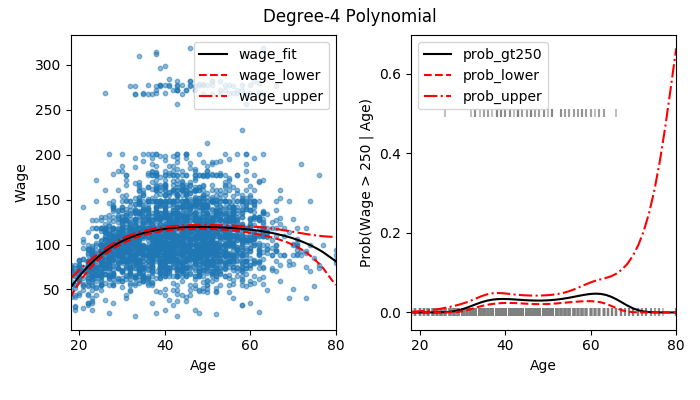
Figure 72: The Wage data. Left: The sold curve is a degree-4 polynomial of wage (in thousands of dollars) as a function of age, fit by least squares. The dotted curves indicate an estimated 95% confidence interval. Right: We model the binary event wage > 250 using logistic regression, again with a degree-4 polynomial. The fitted posterior probability of wage exceeding $250,000 is shown in blue.
7.2 Step Functions
The left-hand panel of figure 73 shows a fit of step functions
to the Wage data from figure 72. We also fit the logistic
regression model to predict the probability that an individual is a high earner
based on age. The right-hand panel displays the fitted posterior probabilities.
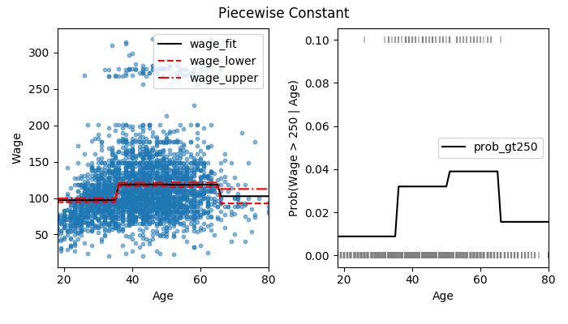
Figure 73: The Wage data. Left: The solid curve displays the fitted value from a least squares regression of wage (in thousands of dollars) using step functions of age. The dotted curves show an estimated 95% confidence interval. Right: We model the binary event wage > 250 using logistic regression again using step functions of age. The fitted posterior probability of wage exceeding $250,000 is shown.
7.3 Basis Functions
7.4 Regression Splines
7.5 Lab: Non-linear Modeling
7.5.1 Polynomial Regression and Step Functions
We define a simple function to replicate the output of poly function in R.
We then fit wage as a fourth order orthogonal polynomial of age. Then we fit
wage as a fourth order raw polynomnial of age. Predicted values from both
fits are very close to one another.
ANOVA analysis on nested models of upto five degree polynomials shows that first three degrees are highly significant. Fourth degree has a p-value just above 0.05. Fifth degree is not significant. Either a cubic or a quartic polynomial provide a reasonable fit.
With the fourth order polynomial as the chosen model, it is straightforward to plot fitted values and confidence intervals.
import pandas as pd import numpy as np import statsmodels.formula.api as smf from statsmodels import datasets from statsmodels.stats.api import anova_lm import statsmodels.api as sm import matplotlib.pyplot as plt wage = datasets.get_rdataset('Wage', 'ISLR').data # Replicate poly() function in R # Based on an answer by K. A. Buhr on stackoverflow def poly(x, p): x = np.array(x) X_mat = np.transpose(np.vstack([x ** k for k in range(p + 1)])) return np.linalg.qr(X_mat)[0][:, 1:] # Fit wage as a function of orthogonal polynomial of age X_wage = poly(wage['age'], 4) X_wage = sm.add_constant(X_wage) poly_model = sm.OLS(wage['wage'], X_wage) poly_fit = poly_model.fit() print('Coefficients of orthogonal polynomials upto 4 degrees') print(poly_fit.summary2().tables[1].iloc[:, :4]) print('------') # Fit wage as a function of raw polynomials of age model = smf.ols('wage ~ age + I(age ** 2) + I(age ** 3) + I(age ** 4)', data=wage) fit = model.fit() print('Coefficients of raw polynomials upto 4 degrees') print(fit.summary2().tables[1].iloc[:, :4]) print('------') # Verify that both models produce identical fitted values print('Orthogonal polynomials and raw polynomials fitted values nearly equal:') print(np.all(np.abs(fit.fittedvalues - poly_fit.fittedvalues) < 1e-7)) print('------') # Fit models of degrees 1 to 5, then compare using ANOVA fit1 = smf.ols('wage ~ age', data=wage).fit() fit2 = smf.ols('wage ~ age + I(age ** 2)', data=wage).fit() fit3 = smf.ols('wage ~ age + I(age ** 2) + I(age ** 3)', data=wage).fit() fit4 = smf.ols('wage ~ age + I(age ** 2) + I(age ** 3) + I(age ** 4)', data=wage).fit() fit5 = smf.ols('wage ~ age + I(age ** 2) + I(age ** 3) + I(age ** 4) + I(age ** 5)', data=wage).fit() print('ANOVA on nested models upto 5 degrees') print(anova_lm(fit1, fit2, fit3, fit4, fit5)) print('------') # For plotting, create age array, get prediction and confidence intervals res_df = pd.DataFrame({'age': np.linspace(wage['age'].min(), wage['age'].max())}) res_df['wage_predict'] = fit.get_prediction(exog=res_df).predicted_mean res_df['wage_low'] = fit.get_prediction(exog=res_df).conf_int()[:, 0] res_df['wage_high'] = fit.get_prediction(exog=res_df).conf_int()[:, 1] fig = plt.figure() ax = fig.add_subplot() wage.plot(x='age', y='wage', kind='scatter', alpha=0.5, ax=ax) res_df.plot(x='age', y='wage_predict', c='r', ax=ax) res_df.plot(x='age', y='wage_low', c='r', linestyle='--', ax=ax) res_df.plot(x='age', y='wage_high', c='r', linestyle='-.', ax=ax) ax.set_xlabel('Age') ax.set_ylabel('Wage') ax.set_title('Degree-4 Polynomial')
Coefficients of orthogonal polynomials upto 4 degrees
Coef. Std.Err. t P>|t|
const 111.703608 0.728741 153.283015 0.000000e+00
x1 447.067853 39.914785 11.200558 1.484604e-28
x2 -478.315806 39.914785 -11.983424 2.355831e-32
x3 -125.521686 39.914785 -3.144742 1.678622e-03
x4 77.911181 39.914785 1.951938 5.103865e-02
------
Coefficients of raw polynomials upto 4 degrees
Coef. Std.Err. t P>|t|
Intercept -184.154180 60.040377 -3.067172 0.002180
age 21.245521 5.886748 3.609042 0.000312
I(age ** 2) -0.563859 0.206108 -2.735743 0.006261
I(age ** 3) 0.006811 0.003066 2.221409 0.026398
I(age ** 4) -0.000032 0.000016 -1.951938 0.051039
------
Orthogonal polynomials and raw polynomials fitted values nearly equal:
True
------
ANOVA on nested models upto 5 degrees
df_resid ssr df_diff ss_diff F Pr(>F)
0 2998.0 5.022216e+06 0.0 NaN NaN NaN
1 2997.0 4.793430e+06 1.0 228786.010128 143.593107 2.363850e-32
2 2996.0 4.777674e+06 1.0 15755.693664 9.888756 1.679202e-03
3 2995.0 4.771604e+06 1.0 6070.152124 3.809813 5.104620e-02
4 2994.0 4.770322e+06 1.0 1282.563017 0.804976 3.696820e-01
------
Next we consider the task of predicting whether an individual earns more than
$250,000 per year. The probability of wage greater than 250K is directly
obtained from the predict method on statsmodels fit object. However, for
logit models, statsmodels does not provide confidence intervals. We use the
formula for confidence intervals.
from statsmodels import datasets import statsmodels.formula.api as smf from sklearn.preprocessing import PolynomialFeatures import numpy as np import pandas as pd import matplotlib.pyplot as plt wage = datasets.get_rdataset('Wage', 'ISLR').data # Create dummy variable for wage > 250K wage['wage_gt250K'] = wage['wage'].apply(lambda x: 1 if x > 250 else 0) model = smf.logit('wage_gt250K ~ age + I(age ** 2) + I(age ** 3) + I(age ** 4)', data=wage) fit = model.fit() # Predicted probability for plotting res_df = pd.DataFrame({'age': np.linspace(wage['age'].min(), wage['age'].max())}) res_df['prob_wage_gt250'] = fit.predict(exog=res_df) # Create X matrix for estimating confidence intervals # Based on a suggestion from David Dale on stackoverflow poly = PolynomialFeatures(degree=4) X_mat = poly.fit_transform(res_df['age'][:, np.newaxis]) cov_beta = fit.cov_params() predict_var = np.diag(np.dot(X_mat, np.dot(cov_beta, X_mat.T))) predict_error = np.sqrt(predict_var) Xb = np.dot(X_mat, fit.params) predict_upper = Xb + 1.96 * predict_error predict_lower = Xb - 1.96 * predict_error res_df['prob_upper'] = np.exp(predict_upper) / (1 + np.exp(predict_upper)) res_df['prob_lower'] = np.exp(predict_lower) / (1 + np.exp(predict_lower)) fig = plt.figure() ax = fig.add_subplot(111) ax.scatter(wage['age'], wage['wage_gt250K']/2, marker='|', color='grey', alpha=0.5) res_df.plot(x='age', y='prob_wage_gt250', c='b', ax=ax) res_df.plot(x='age', y='prob_upper', c='r', linestyle='--', ax=ax) res_df.plot(x='age', y='prob_lower', c='r', linestyle='-.', ax=ax) ax.set_xlabel('Age') ax.set_ylabel('Prob(Wage > 250 | Age)')
Optimization terminated successfully.
Current function value: 0.116870
Iterations 12
We now fit a step function of age.
from statsmodels import datasets import statsmodels.formula.api as smf import pandas as pd wage = datasets.get_rdataset('Wage', 'ISLR').data wage['age_grp'] = pd.cut(wage['age'], bins=[17, 33.5, 49, 64.5, 81], labels=['17to33', '33to49', '49to64', '64to80']) step_model = smf.ols('wage ~ age_grp', data=wage) step_fit = step_model.fit() print('Coefficients of age groups') print(step_fit.summary2().tables[1].iloc[:, :4])
Coefficients of age groups
Coef. Std.Err. t P>|t|
Intercept 94.158392 1.476069 63.789970 0.000000e+00
age_grp[T.33to49] 24.053491 1.829431 13.148074 1.982315e-38
age_grp[T.49to64] 23.664559 2.067958 11.443444 1.040750e-29
age_grp[T.64to80] 7.640592 4.987424 1.531972 1.256350e-01
8 Tree-Based Models
8.1 The Basics of Decision Trees
8.1.1 Regression Trees
Figure 74 shows a regression tree fit to Hitters data. We
predict log of Salary based on Years (column 0 of X matrix) and Hits
(column 1). The figure consists of a series of splitting rules. The top split
assigns observations having Years < 4.5 to the left branch. Players with
Years > 4.5 are assigned to the right branch, and then the group is further
subdivided by Hits.
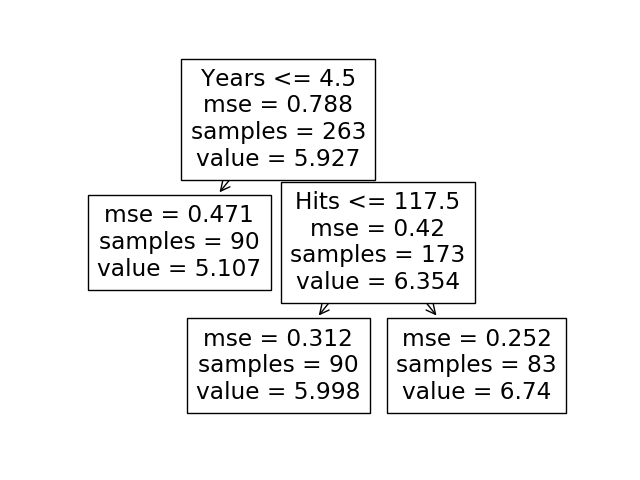
Figure 74: For the Hitters data, a regression tree for producing the log salary of a baseball player, based on the number of years that he has played in the major leagues and the number of hits that he made in the previous year.
Overall, the tree segments the players into four regions of predictor space:
\(R_{1}=\{X | Years < 4.5, Hits < 15.5\}\), \(R_{2}=\{X | Years < 4.5, Hits > 15.5\}\),
\(R_{3}=\{X | Years > 4.5, Hits < 117.5\}\), and \(R_{4}=\{X | Years > 4.5, Hits >
117.5\}\). Figure 75 illustrates the regions as a function of
Years and Hits.
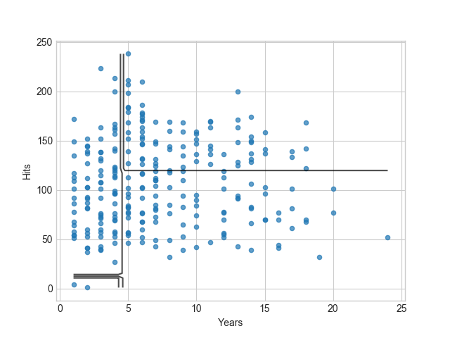
Figure 75: The four-region partition for the Hitters data set from the regression tree in Figure 74.
Figure 76 shows a five-region example of prediction via stratification of the feature space.
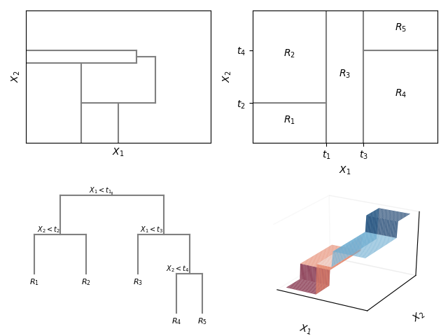
Figure 76: Top Left: A partition of two-dimensional space that could not result from recursive binary splitting. Top Right: The output of recursive binary splitting on a two-dimensional example. Bottom Left: A tree corresponding to the partition on the top right panel. Bottom Right: A perspective plot of the prediction surface corresponding to that tree.
8.1.2 Classification Trees
8.1.3 Trees versus Linear Models
Figure 77 is an example of when a linear model or a tree performs better. In the top row, the relationship between the features and responses is linear. A linear regression works well. In the bottom row, the relationship between the features and the responses is non-linear. A decision tree outperforms linear regression.
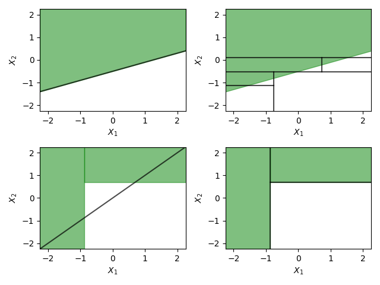
Figure 77: Top Row: A two-dimensional classification example in which the true decision boundary is linear, and is indicated by the shaded regions. A classical approach that assumes a linear boundary (left) will outperform a decision tree that performs splits parallel to the axes (right). Bottom Row: Here the true decision boundary is non-linear. A linear model is unable to capture the true decision boundary (left), whereas a decision tree is successful (right).
8.2 Bagging, Random Forests, Boosting
Figure 78 is a graphical representation of variable
importances in the Heart data. We see the mean decrease in Gini index for each variable
relative to the largest. The variables with the largest mean decrease in Gini
index are Ca, Thal, HR, and Oldpeak. When a categorical variable has
more than two values, it appears in the figure more than once. For example,
Thal has values normal, reversable, and fixed. In the figure, we see
Thal_normal and Thal_reversable.

Figure 78: A variable importance plot for the Heart data. Variable importance is computed using the mean decrease in Gini index and expressed relative to the maximum.
8.3 Lab: Decision Trees
8.3.1 Fitting Classification Trees
In scikit-learn library, tree module implements classification and
regression trees.
We first use classification trees to analyze the Carseats data set. In these
data, Sales is a continuous variable, and so we begin by recoding it as a binary
variable.
from statsmodels import datasets from sklearn.tree import DecisionTreeClassifier, export_text, plot_tree from sklearn.model_selection import train_test_split, GridSearchCV import pandas as pd Carseats = datasets.get_rdataset('Carseats', 'ISLR').data Carseats['High Sales'] = Carseats['Sales'].apply( lambda x: 'Yes' if x > 8 else 'No') # Create dummy variables for qualitative data X_numeric = Carseats[['CompPrice', 'Income', 'Advertising', 'Population', 'Price', 'Age', 'Education']] X_cat = Carseats[['ShelveLoc', 'Urban', 'US']] X_dummies = pd.get_dummies(X_cat, drop_first=True) X = pd.concat([X_numeric, X_dummies], axis=1) y = Carseats['High Sales'] # Fit model to all data tree = DecisionTreeClassifier(ccp_alpha=0.02) tree.fit(X, y) print('Decision tree in text') print(export_text(tree, feature_names=X.columns.to_list())) # Split data between train and test sets # Fit model to training data, then print prediction accuracy on test data X_train, X_test, y_train, y_test = train_test_split(X, y, test_size=0.5, random_state=0) model = DecisionTreeClassifier() model.fit(X_train, y_train) res_crosstab = pd.crosstab(y_test, model.predict(X_test)) res_crosstab.columns.name = 'High Sales Predict' print('Prediction accuracy on test data') print(res_crosstab) print(str(round((96 + 48) / X_test.shape[0], 2)), 'of predictions are correct') # Use grid search to find optimal level of tree complexity param_grid = {'ccp_alpha': np.linspace(0, 0.02, 11)} grid = GridSearchCV(DecisionTreeClassifier(), param_grid, cv=5, return_train_score=True) grid.fit(X, y)
Decision tree in text |--- ShelveLoc_Good <= 0.50 | |--- Price <= 92.50 | | |--- class: Yes | |--- Price > 92.50 | | |--- Advertising <= 13.50 | | | |--- class: No | | |--- Advertising > 13.50 | | | |--- class: Yes |--- ShelveLoc_Good > 0.50 | |--- class: Yes Prediction accuracy on test data High Sales Predict No Yes High Sales No 97 21 Yes 30 52 0.72 of predictions are correct
8.3.2 Fitting Regression Trees
Here we fit a regression tree to the Boston data set. First we create a
training set, and fit the tree to the training data.
from statsmodels import datasets from sklearn.model_selection import train_test_split, GridSearchCV from sklearn.tree import DecisionTreeRegressor, export_text import pandas as pd import numpy as np Boston = datasets.get_rdataset('Boston', package='MASS').data X = Boston.drop(columns='medv') y = Boston['medv'] X_train, X_test, y_train, y_test = train_test_split(X, y, test_size=0.5, random_state=0) tree = DecisionTreeRegressor(max_leaf_nodes=40, random_state=0) tree.fit(X_train, y_train) resid_mean_dev = np.mean(np.abs(y_test - tree.predict(X_test))) resid_dist = pd.Series(np.quantile(y_test - tree.predict(X_test), [0, 0.25, 0.5, 0.75, 1]), index=['Min', '1st Qu', 'Median', '3rd Qu', 'Max']) print('Residual mean deviance:', str(round(resid_mean_dev, 2))) print('Distribution of residuals:') print(resid_dist) print('Mean squared error:', str(round(np.std(y_test - tree.predict(X_test)), 2))) print('------') # Use grid search to find best tree size # Depending upon starting point, tree size can be very different params_grid = {'max_leaf_nodes': np.arange(2, 21)} grid = GridSearchCV(DecisionTreeRegressor(random_state=0), param_grid=params_grid, cv=5) grid.fit(X_train, y_train) print('Best fitted tree') print(export_text(grid.best_estimator_, feature_names=X.columns.to_list())) print('Mean squared error:', str(np.round(np.std(y_test - grid.best_estimator_.predict(X_test)), 2)))
Residual mean deviance: 3.07 Distribution of residuals: Min -16.675000 1st Qu -2.118519 Median -0.400000 3rd Qu 1.466667 Max 35.500000 dtype: float64 Mean squared error: 5.06 ------ Best fitted tree |--- lstat <= 7.81 | |--- rm <= 7.43 | | |--- dis <= 1.48 | | | |--- value: [50.00] | | |--- dis > 1.48 | | | |--- rm <= 6.56 | | | | |--- value: [23.75] | | | |--- rm > 6.56 | | | | |--- value: [30.67] | |--- rm > 7.43 | | |--- ptratio <= 15.40 | | | |--- value: [48.64] | | |--- ptratio > 15.40 | | | |--- value: [41.26] |--- lstat > 7.81 | |--- lstat <= 15.00 | | |--- rm <= 6.53 | | | |--- value: [20.78] | | |--- rm > 6.53 | | | |--- value: [26.02] | |--- lstat > 15.00 | | |--- dis <= 1.92 | | | |--- value: [11.67] | | |--- dis > 1.92 | | | |--- value: [16.83] Mean squared error: 4.89
8.3.3 Bagging and Random Forests
from statsmodels import datasets from sklearn.ensemble import RandomForestRegressor, BaggingRegressor from sklearn.model_selection import train_test_split from sklearn.tree import DecisionTreeRegressor import pandas as pd import numpy as np import matplotlib.pyplot as plt plt.style.use('seaborn-whitegrid') Boston = datasets.get_rdataset('Boston', package='MASS').data X = Boston.drop(columns='medv').copy() y = Boston['medv'].copy() X_train, X_test, y_train, y_test = train_test_split(X, y, random_state=0) bag = BaggingRegressor(random_state=0) bag.fit(X_train, y_train) print('BaggingRegressor model') print('Model performance on training data') print('Mean of squared residuals: %0.2f' % np.mean((y_train - bag.predict(X_train)) ** 2)) print('Percent variance explained: %0.2f' % bag.score(X_train, y_train)) print('------') print('Model performance on test data') print('Percent variance explained: %0.2f' % np.mean((y_test - bag.predict(X_test)) ** 2)) # plt.scatter(y_test, bag.predict(X_test), alpha=0.7) # plt.plot([y_test.min(), y_test.max()], [y_test.min(), y_test.max()], linestyle='--', # alpha=0.7) # plt.gca().set(xlabel='True price', ylabel='Predicted price') forest = RandomForestRegressor(random_state=0) forest.fit(X_train, y_train) print('------') print('RandomForestRegressor model') print('Mean of squared residuals: %0.2f' % np.mean((y_test - forest.predict(X_test)) ** 2)) feature_imp = pd.Series(forest.feature_importances_, index=X.columns.to_list()) feature_imp.sort_values(ascending=False, inplace=True) print('------') print('Feature importance of variables') print((feature_imp * 100).round(2))
BaggingRegressor model Model performance on training data Mean of squared residuals: 2.49 Percent variance explained: 0.97 ------ Model performance on test data Percent variance explained: 22.79 ------ RandomForestRegressor model Mean of squared residuals: 16.73 ------ Feature importance of variables rm 41.65 lstat 40.75 dis 4.33 crim 4.15 ptratio 2.12 tax 1.80 nox 1.58 age 1.24 black 1.10 indus 0.69 rad 0.41 zn 0.11 chas 0.07 dtype: float64
8.3.4 Boosting
from statsmodels import datasets import numpy as np from sklearn.ensemble import AdaBoostRegressor from sklearn.model_selection import train_test_split from sklearn.tree import DecisionTreeRegressor import pandas as pd Boston = datasets.get_rdataset('Boston', package='MASS').data X = Boston.drop(columns='medv').copy() y = Boston['medv'].copy() X_train, X_test, y_train, y_test = train_test_split(X, y, random_state=0) tree = DecisionTreeRegressor(max_depth=4) boost = AdaBoostRegressor(tree, n_estimators=5000, random_state=0) boost.fit(X_train, y_train) feature_imp = pd.Series(boost.feature_importances_, index=X_train.columns) feature_imp.sort_values(ascending=False, inplace=True) print('AdaBoostRegressor model') print('Feature importances') print((feature_imp * 100).round(2)) print('------') print('Model performance on training data') print('Mean of squared residuals: %0.2f' % np.mean((y_train - boost.predict(X_train)) ** 2)) print('Percent of variance explained: %0.2f' % boost.score(X_train, y_train)) print('------') print('Model performance on test data') print('Mean of squared residuals: %0.2f' % np.mean((y_test - boost.predict(X_test)) ** 2)) print('Percent of variance explained: %0.2f' % boost.score(X_test, y_test))
AdaBoostRegressor model Feature importances lstat 41.10 rm 31.69 dis 7.42 tax 4.69 ptratio 4.44 nox 2.32 crim 2.19 black 1.81 age 1.63 indus 1.60 rad 0.57 zn 0.27 chas 0.26 dtype: float64 ------ Model performance on training data Mean of squared residuals: 3.37 Percent of variance explained: 0.96 ------ Model performance on test data Mean of squared residuals: 21.91 Percent of variance explained: 0.73
9 Support Vector Machines
9.1 Maximal Margin Classifier
9.1.1 What is a Hyperplane?
Figure 79 shows a hyperplane in two-dimensional space.
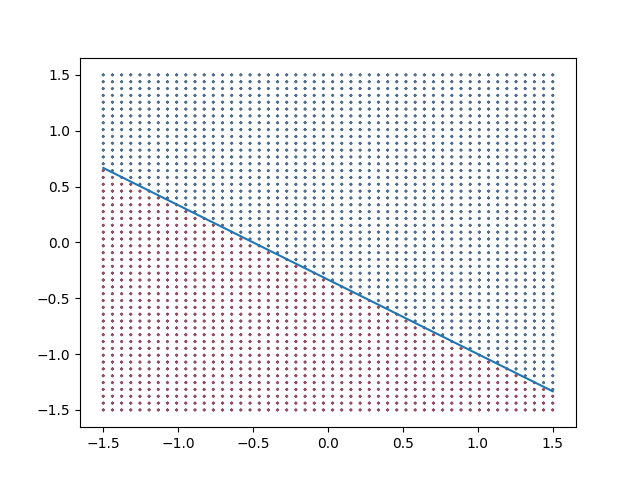
Figure 79: The hyperplane \(1 + 2X_1 + 3X_2 = 0\) is shown. The blue region is the set of points for which \(1 + 2X_1 + 3X_2 > 0\), and the red region is the set of points for which \(1 + 2X_1 + 3X_2 < 0\).
9.1.2 Classification Using a Separating Hyperplane
Figure 80 shows an example of a separating hyperplane classifier.
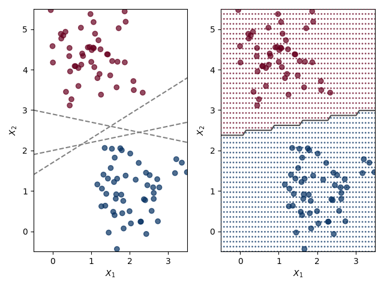
Figure 80: Left: There are two classes of observations, shown in red and blue, each of which has measurements on two variables. Three separating hyperplanes, out of many possible, are shown in gray. Right: A separating hyperplane is shown in black. The red and blue grid indicates the decision rule made by a classifier based on this separating hyperplane: a test observation that falls in the red portion of the grid will be assigned to the red class. A test observation that falls into the blue portion of the grid will be assigned to the blue class.
9.1.3 The Maximal Margin Classifier
Examining figure 81, we see that three training observations are equidistant from the maximal margin hyperplane and lie along the dashed lines indicating the width of the margin. The three observations are known as support vectors, since they are vectors in p-dimensional space (in figure 81, \(p=2\)) and they ``support'' the maximal margin hyperplane. If these points were moved slightly, then the maximal margin hyperplane would move as well.

Figure 81: There are two classes of observations, shown in red and in blue. The maximal margin hyperplane is shown as a solid line. The margin is the distance from the solid line to either of the dashed lines. The two red points the blue point that lie on the dashed lines are support vectors. The red and blue grid indicates the decision rule made by a classifier based on this separating hyperplane.
9.1.4 Construction of the Maximal Margin Classifier
9.1.5 The Non-separable Case
Figure 82 shows an example where we cannot exactly separate the two classes. There is no maximal margin classifier.

Figure 82: There are two classes of observations, shown in red and blue. In this case, the two classes are not separable by a hyperplane. Therefore, the maximal margin classifier cannot be used.
9.2 Support Vector Classifiers
9.2.1 Overview of the Support Vector Classifier
In figures 83, addition of a single observation in the right hand panel leads to a dramatic change in the maximal margin hyperplane.
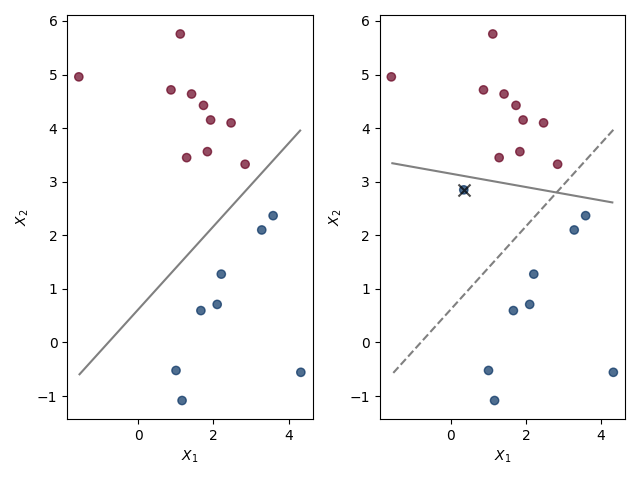
Figure 83: Left: Two classes of observations are shown in blue and in red, along with the maximal margin hyperplane. Right: An additional blue observation (marked with `x') has been added, leading to a dramatic shift in the maximal margin hyperplane shown as a solid line. The dashed line indicates the maximal margin hyperplane that was obtained in the absence of this additional point.
Figure 84 is an example of a support vector classifier. Most of the observations are on the correct side of the margin. However, a small subset of observations are on the wrong side of the margin.
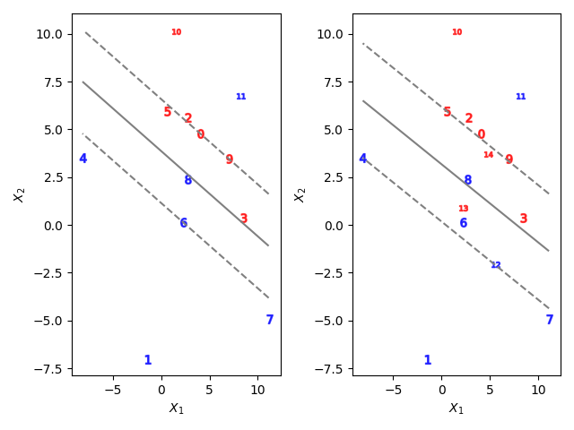
Figure 84: Left: A support vector classifier was fit to a small data set. The hyperplane is shown as a solid line and the margins are shown as dashed lines. Blue observations: Observations 1, 4, 7 are on the correct side of the margin. Observation 6 is on the margin. Observation 8 is on the wrong side of the margin. Observation 11 is on the wrong side of the hyperplane. Red observations: Observations 2, 10 are on the right side of the margin. Observationsn 0, 9 are on the margin. Observations 3, 5 are on the wrong side of the margin. No observation is on the wrong side of the hyperplane. Righ: Same as right panel, with three additional points 12, 13, and 14. Observation 13 is on the wrong side of hyperplane. Now observation 8 is also on the wrong side of the hyperplane.
9.2.2 Details of the Support Vector Classifier
Figure 85 illustrates the width of margin for different values of regularization parameter \(C\).
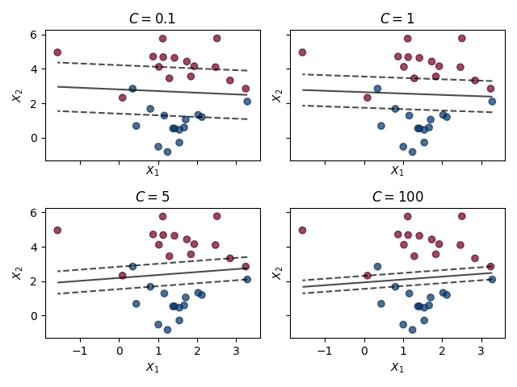
Figure 85: A support vector classifier was fit using four different values of the regularization parameter \(C\) (which is different from \(C\), the non-negative tuning parameter, described in the book). The strenght of the regularization is inversely proportional to \(C\). When \(C\) is small, there is a high tolerance for observations being on the wrong side of the margin. Therefore, the margin is wide. As \(C\) increases, the tolerance for observations being on the wrong side of the margin decreases. Therefore, the margin narrows.
9.3 Support Vector Machines
9.3.1 Classification with Non-linear Decision Boundaries
In figure 86 consider the data shown in the left panel. It is clear that a support vector classifier or any linear classifier will perform poorly here. Indeed, the support vector classifier shown in the right panel is useless here.
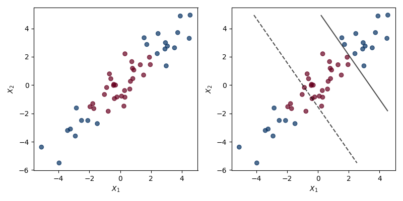
Figure 86: Left: The observations fall into two classes, with a non-linear boundary between them. Right: The support vector classifier seeks a linear boundary, and consequently performs poorly.
9.3.2 The Support Vector Machine
In figure 87, the left-hand panel shows an example of SVM with a polynomial kernel applied the non-linear data from figure 86. The fit is an improvement over the linear support vector classifier. The right-hannd panel show an example of an SVM with a radial kernel on this non-linear data. SVM does the best job of separating the two classes.
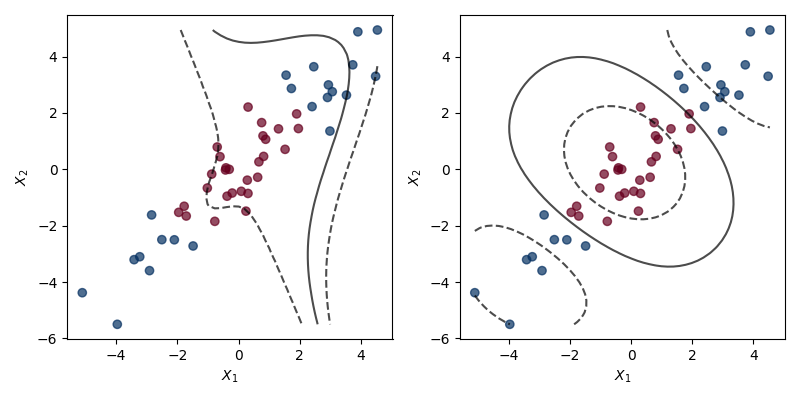
Figure 87: Left: An SVM with a polynomial kernel of degree 3 is applied to the non-linear data from figure 86, resulting in a more appropriate decision rule. Right: An SVM with a radial kernel is applied. In this example, radial kernel is the most capable of capturing the decision boundary.
9.3.3 An Application to the Heart Disease Data
In figure 88, the left-hand panel displays ROC curves for training set predictions for both LDA and the support vector classifier. The right-hand panel displays ROC curves for SVMs using a radial kernel, with two values of \(\gamma\). As \(\gamma\) increases and the fit becomes more non-linear, the ROC improves.
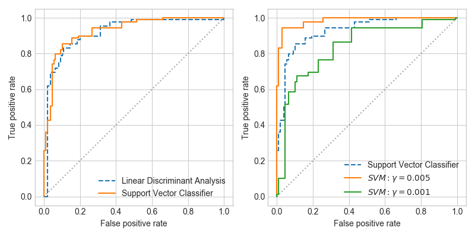
Figure 88: ROC curves for Heart data training set. Left: The support vector classifier and LDA are compared. Right: The support vector classifier is compared to an SVM using radial basis kernel with \(\gamma = 0.005\) and \(\gamma = 0.001\).
Figure 89 compares ROC curves on test observations. Using default settings for all parameters other than \(\gamma\), SVM model performance is worse than support vector classifier model performance. In the code, there is a commented section which shows how model parameters \(C\) and \(\gamma\) can be tuned to improve model performance.
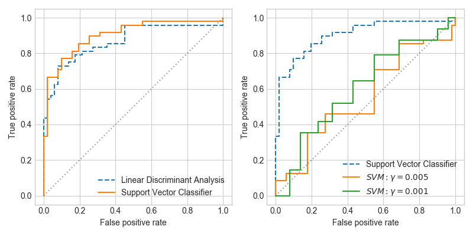
Figure 89: ROC curves for test set of the Heart data. Left: The support vector classifier and LDA are compared. Right: The support vector classifier is compared to an SVM using radial basis kernel with \(\gamma = 0.005\) and \(\gamma = 0.001\).
9.4 SVMs with More than Two Classes
9.4.1 One-Versus-One Classification
9.4.2 One-Versus-All Classification
9.5 Relationship with Logistic Regression
9.6 Lab: Support Vector Machines
We use svm module of sklearn library to demonstrate the support vector
classifier and the SVM.
9.6.1 Support Vector Classifier
To fit a support vector classifier, we use SVC function with the argument
kernel set to 'linear'.
import numpy as np import pandas as pd import matplotlib.pyplot as plt import rpy2.robjects as robjects import sys from sklearn.svm import SVC from sklearn.model_selection import GridSearchCV from sklearn.metrics import confusion_matrix plt.style.use('seaborn-whitegrid') sys.path.append('code/chap9') from svm_funcs import svm_model_plot # To replicate results, get data from R X = robjects.r('''set.seed(1); x <- matrix(rnorm(20 * 2))''') X = np.array(X).reshape((20, 2), order='F') y = np.concatenate([np.ones(10) * -1, np.ones(10)]) y = y.astype(int) X[y == 1, :] += 1 # Plot shows classes are not linearly separable plt.scatter(X[:, 0], X[:, 1], c=y, cmap=plt.cm.get_cmap('RdBu', 2), alpha=0.7) # Fit support vector classifier svc = SVC(C=10, kernel='linear') svc.fit(X, y) svm_model_plot(svc, X, y) # Support vector indices # Remember python count begins at 0; R count begins at 1 print('Support vector indices:', svc.support_) print('Parameters of support vector classifier:') # print(svc.get_params()) for param_name in ['C', 'kernel']: print(' ', param_name, ':', svc.get_params()[param_name]) print('Number of support vectors:', svc.n_support_) print('Number of classes:', svc.n_features_in_) print('Classes:', svc.classes_) print('------') # Use smaller value of cost to obtain larger number of support vectors svc = SVC(C=0.1, kernel='linear') svc.fit(X, y) svm_model_plot(svc, X, y) print('Suport vector indices:', svc.support_) print('------') # Use grid search to find the value of cost parameter C for best fit param_grid = {'C': [0.001, 0.01, 0.1, 1, 5, 10, 100]} svc = SVC(kernel='linear') grid = GridSearchCV(svc, param_grid=param_grid, cv=10) grid.fit(X, y) grid_res = pd.DataFrame(grid.cv_results_['params']) grid_res['score'] = grid.cv_results_['mean_test_score'] print('Best parameter:', grid.best_params_) print('Performance results:') print(grid_res) print('------') # Generate test data set # First run code in book so that test set is identical to that used in the book # This does not produce results identical to those shown in the book # test_data = robjects.r(''' # get_x_test <- function(){ # x <- matrix(rnorm(20 * 2), ncol = 2) # y <- c(rep(-1, 10), rep(1, 10)) # x[y == 1, ] <- x[y == 1, ] + 1 # dat <- data.frame(x = x, y = as.factor(y)) # library(e1071) # svmfit <- svm(y ~ ., data = dat, kernel = 'linear', cost = 10, scale = FALSE) # set.seed(1) # tune.out <- tune(svm, y ~ ., data = dat, kernel = 'linear', # ranges = list(cost = c(0.001, 0.01, 0.1, 1, 5, 10, 100))) # x_test <- matrix(rnorm(20 * 2)) # y_test <- sample(c(-1, 1), 20, rep = TRUE) # c(x_test, y_test) # } # get_x_test() # ''') # test_data = np.array(test_data) # X_test = test_data[:20 * 2] # X_test = np.array(X_test).reshape((20, 2), order='F') # y_test = test_data[20 * 2:] # y_test = np.array(y_test).astype(int) # X_test[y_test == 1, :] += 1 np.random.seed(11) X_test = np.random.normal(size=[20, 2]) y_test = np.random.choice([-1, 1], size=20, replace=True) X_test[y_test == 1, :] += 1 model = grid.best_estimator_ y_predict = model.predict(X_test) res_df = pd.DataFrame(confusion_matrix(y_test, y_predict), columns=[-1, 1], index=[-1, 1]) res_df.columns.name = 'Predict' res_df.index.name = 'True' print('Prediction on test data with best model (C=0.1):') print(res_df) print('------') # Fit support vector classifier with C = 0.01, then predict on test data svc = SVC(C=0.01, kernel='linear') svc.fit(X, y) y_predict = svc.predict(X_test) res_df_new = pd.DataFrame(confusion_matrix(y_test, y_predict), columns=[-1, 1], index=[-1, 1]) res_df_new.columns.name = 'Predict' res_df_new.index.name = 'True' print('Prediction on test data with model using C = 0.01:') print(res_df_new) print('------') # Separate the two classes so that they are linearly separable X[y == 1, :] += 0.5 plt.scatter(X[:, 0], X[:, 1], c=y, cmap=plt.cm.get_cmap('RdBu', 2), alpha=0.7) X_test[y_test == 1, :] += 0.5 # Fit a support vector classifier with a high value of cost svc = SVC(C=1e5, kernel='linear') svc.fit(X, y) svm_model_plot(svc, X, y) print('Cost parameter:', svc.get_params()['C']) print('Number of support vectors:', svc.n_support_) print('Fraction of training observations correctly predicted:', svc.score(X, y)) print('Fraction of testing observations correctly predicted:', svc.score(X_test, y_test)) print('------') # Refit model with smaller value of cost parameter svc = SVC(C=1, kernel='linear') svc.fit(X, y) svm_model_plot(svc, X, y) print('Cost parameter:', svc.get_params()['C']) print('Number of support vectors:', svc.n_support_) print('Fraction of training observations correctly predicted:', svc.score(X, y)) print('Fraction of testing observations correctly predicted:', svc.score(X_test, y_test)) print('------')
Support vector indices: [ 0 1 4 6 13 15 16]
Parameters of support vector classifier:
C : 10
kernel : linear
Number of support vectors: [4 3]
Number of classes: 2
Classes: [-1 1]
------
Suport vector indices: [ 0 1 2 3 4 6 8 9 11 12 13 14 15 16 17 19]
------
Best parameter: {'C': 0.1}
Performance results:
C score
0 0.001 0.75
1 0.010 0.75
2 0.100 0.95
3 1.000 0.90
4 5.000 0.85
5 10.000 0.85
6 100.000 0.85
------
Prediction on test data with best model (C=0.1):
Predict -1 1
True
-1 11 2
1 2 5
------
Prediction on test data with model using C = 0.01:
Predict -1 1
True
-1 12 1
1 4 3
------
Cost parameter: 100000.0
Number of support vectors: [1 2]
Fraction of training observations correctly predicted: 1.0
Fraction of testing observations correctly predicted: 0.9
------
Cost parameter: 1
Number of support vectors: [3 4]
Fraction of training observations correctly predicted: 0.95
Fraction of testing observations correctly predicted: 0.9
------
9.6.2 Support Vector Machine
In order to fit an SVM using a non-linear kernel, we once again use the SVC
function. We now set the parameter kernel to 'rbf'.
import numpy as np import rpy2.robjects as robjects import sys import matplotlib.pyplot as plt import pandas as pd from sklearn.model_selection import train_test_split, GridSearchCV from sklearn.svm import SVC sys.path.append('code/chap9') from svm_funcs import svm_model_plot # To replicate results, get data from R X = robjects.r('''set.seed(1); x <- matrix(rnorm(200 * 2), ncol = 2)''') X = np.array(X).reshape(200, 2) X[:100, :] += 2 X[100:150, :] -= 2 y = np.concatenate([np.ones(150), np.ones(50) * 2]) plt.scatter(X[:, 0], X[:, 1], c=y, cmap=plt.cm.get_cmap('RdBu', 2), alpha=0.7) # Split data between train and test sets X_train, X_test, y_train, y_test = train_test_split(X, y, test_size=100, random_state=0) # Fit training data set with a radial kernel svm = SVC(kernel='rbf') svm.fit(X_train, y_train) svm_model_plot(svm, X_train, y_train) print('SVM model fit with cost parameter:', svm.get_params()['C']) print('Number of support vectors:', svm.n_support_) print('Fraction of accurate predictions on training data:', svm.score(X_train, y_train)) print('Fraction of accurate predictions on test data:', svm.score(X_test, y_test)) print('------') # Fit training data set with a high value for cost parameter svm = SVC(C=1e5, kernel='rbf') svm.fit(X_train, y_train) svm_model_plot(svm, X_train, y_train) print('SVM model fit with cost parameter:', svm.get_params()['C']) print('Number of support vectors:', svm.n_support_) print('Fraction of accurate predictions on training data:', svm.score(X_train, y_train)) print('Fraction of accurate predictions on test data:', svm.score(X_test, y_test)) print('------') # Find best values of C and gamma using grid search param_grid = {'C': [0.1, 1, 5], 'gamma': [0.1, 0.5, 1]} svm = SVC(kernel='rbf') grid = GridSearchCV(svm, param_grid=param_grid) grid.fit(X_train, y_train) res_df = pd.DataFrame(grid.cv_results_['params']) res_df['test_score'] = grid.cv_results_['mean_test_score'] print('Grid search results:') print(res_df) print('Fraction of accurate predictions on test data:', grid.best_estimator_.score(X_test, y_test))
SVM model fit with cost parameter: 1.0
Number of support vectors: [15 14]
Fraction of accurate predictions on training data: 0.92
Fraction of accurate predictions on test data: 0.85
------
SVM model fit with cost parameter: 100000.0
Number of support vectors: [11 8]
Fraction of accurate predictions on training data: 0.99
Fraction of accurate predictions on test data: 0.8
------
Grid search results:
C gamma test_score
0 0.1 0.1 0.75
1 0.1 0.5 0.74
2 0.1 1.0 0.75
3 1.0 0.1 0.92
4 1.0 0.5 0.93
5 1.0 1.0 0.92
6 5.0 0.1 0.92
7 5.0 0.5 0.92
8 5.0 1.0 0.88
Fraction of accurate predictions on test data: 0.86
9.6.3 ROC Curves
In sklearn library, metrics module provides functions roc_curve and
plot_roc_curve.
import numpy as np import matplotlib.pyplot as plt import rpy2.robjects as robjects from sklearn.svm import SVC from sklearn.metrics import plot_roc_curve from sklearn.model_selection import train_test_split X = robjects.r('''set.seed(1); x <- matrix(rnorm(200 * 2), ncol = 2)''') X = np.array(X, order='F') X[:100, :] += 2 X[100:150, :] -= 2 y = np.concatenate([np.ones(150), np.ones(50) * 2]) X_train, X_test, y_train, y_test = train_test_split(X, y) svm = SVC(probability=True, random_state=0) svm.fit(X_train, y_train) fig, ax = plt.subplots() plot_roc_curve(svm, X_train, y_train, label='Training data', ax=ax) plot_roc_curve(svm, X_test, y_test, label='Test data', linestyle='--', ax=ax)
9.6.4 SVM with Multiple Classes
import numpy as np import matplotlib.pyplot as plt from sklearn.svm import SVC from sklearn.model_selection import train_test_split np.random.seed(0) X = np.random.normal(size=[200, 2]) X[:100, :] += 2 X[100:150, :] -= 2 y = np.concatenate([np.ones(150), np.ones(50) * 2]) X = np.vstack([X, np.random.normal(size=[50, 2])]) y = np.concatenate([y, np.zeros(50)]) y = y.astype(int) X[y == 0, 1] += 2 plt.scatter(X[:, 0], X[:, 1], c=y, cmap=plt.cm.get_cmap('viridis', 3), alpha=0.7) X_train, X_test, y_train, y_test = train_test_split(X, y, random_state=0) svm = SVC() svm.fit(X_train, y_train) print('In training data, fraction of observations correctly classified:', round(svm.score(X_train, y_train), 2)) print('In test data, fraction of observations correctly classified:', round(svm.score(X_test, y_test), 2))
In training data, fraction of observations correctly classified: 0.81 In test data, fraction of observations correctly classified: 0.84
9.6.5 Application to Gene Expression Data
import numpy as np import pandas as pd from rpy2 import robjects from sklearn.svm import SVC from sklearn.metrics import confusion_matrix khan = {} khan['xtrain'] = robjects.r('library(ISLR); Khan$xtrain') khan['xtest'] = robjects.r('Khan$xtest') khan['ytrain'] = robjects.r('Khan$ytrain') khan['ytest'] = robjects.r('Khan$ytest') X_train = np.array(khan['xtrain']) X_test = np.array(khan['xtest']) y_train = np.array(khan['ytrain']).astype(int) y_test = np.array(khan['ytest']).astype(int) print('Shape of training data:', X_train.shape) print(y_train.shape) print('Shape of test data:', X_test.shape) print(y_test.shape) print('Count of tissue sample types in training data:') print(pd.value_counts(y_train).sort_index()) print('In test data:') print(pd.value_counts(y_test).sort_index()) print('------') # Fit linear kernel model svc = SVC(kernel='linear') svc.fit(X_train, y_train) y_predict_train = svc.predict(X_train) train_confusion = pd.DataFrame(confusion_matrix(y_train, y_predict_train)) y_predict_test = svc.predict(X_test) test_confusion = pd.DataFrame(confusion_matrix(y_test, y_predict_test)) for df in [train_confusion, test_confusion]: df.columns = [1, 2, 3, 4] df.index = [1, 2, 3, 4] df.columns.name = 'Predicted' df.index.name = 'True' print('Number of support vectors:', svc.n_support_) print('Fraction of correct predictions on training data:', svc.score(X_train, y_train)) print('Confusion matrix on training data:') print(train_confusion) print('------') print('Fraction of correct predictions on test data:', svc.score(X_test, y_test)) print('Confusion matrix on test data:') print(test_confusion)
Shape of training data: (63, 2308) (63,) Shape of test data: (20, 2308) (20,) Count of tissue sample types in training data: 1 8 2 23 3 12 4 20 dtype: int64 In test data: 1 3 2 6 3 6 4 5 dtype: int64 ------ Number of support vectors: [ 7 18 9 20] Fraction of correct predictions on training data: 1.0 Confusion matrix on training data: Predicted 1 2 3 4 True 1 8 0 0 0 2 0 23 0 0 3 0 0 12 0 4 0 0 0 20 ------ Fraction of correct predictions on test data: 0.9 Confusion matrix on test data: Predicted 1 2 3 4 True 1 3 0 0 0 2 0 6 0 0 3 0 2 4 0 4 0 0 0 5
10 Unsupervised Learning
10.1 The Challenge of Unsupervised Learning
10.2 Principal Component Analysis
10.2.1 What are Principal Components?
We first normalize USArrests data so that every variable has mean 0 and
standard deviation 1. Then we perform PCA on the normalized data set. Table
20 shows loadings of the first two principal components.
Figure 90 plots the first two principal components of these
data. The figure represents both the principal component scores and the loading
vectors in a single biplot display.
| PC1 | PC2 | |
|---|---|---|
| Murder | 0.5358995 | 0.4181809 |
| Assault | 0.5831836 | 0.1879856 |
| UrbanPop | 0.2781909 | -0.8728062 |
| Rape | 0.5434321 | -0.1673186 |

Figure 90: The first two principal components for the USArrests data. The blue state names represent the scores for the first two principal components. The red arrows indicate the first two principal components loading vectors. This figure is known as a biplot, because it displays both the principal component scores and the principal component loadings.
10.2.2 Another Interpretation of Principal Components
10.2.3 More on PCA
In figure 91, the left-hand panel is the same as figure
90, where each variable was first scaled to have mean zero and standard
deviation one, then principal component analysis was performed. The right-hand
panel displays the first two principal components on the raw data. Since
variables were not scaled to have standard deviation one, the first principal
component places almost all of its weight on Assault, while the second
principal component places almost all of its weight on UrbanPop.
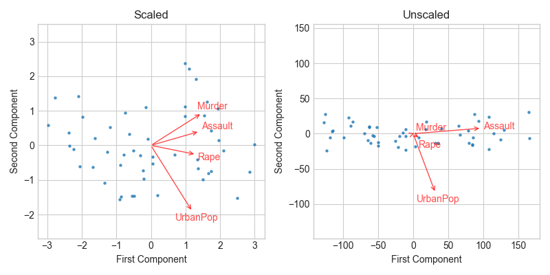
Figure 91: Two principal component biplots for USArrests data. Left: Same as figure 90, with variables scaled to have unit standard deviations. Right: Principal components using unscaled data. Assault has by far the largest loading on the first principal component because it has the largest variance among the four variables. In general, it is recommended to scale variables to have standard deviation one.
In Figure 92, the left-hand panel shows the proportion of
variance explained (PVE) by each principal component of USArrests data. The
right-hand panel shows the cumulative PVE.
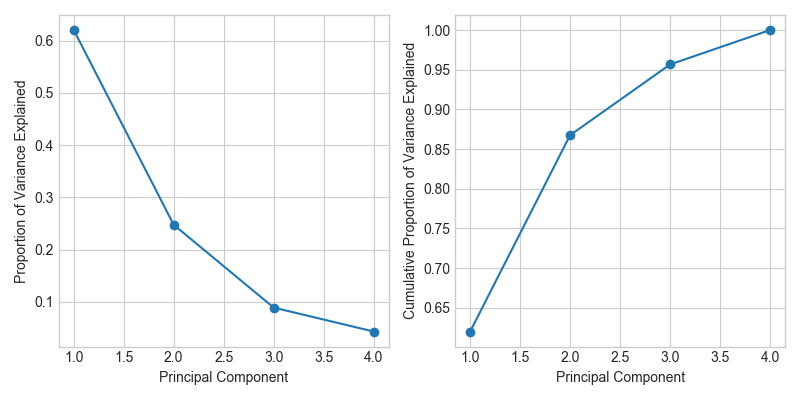
Figure 92: Left: A scree plot depicting the proportion of variance explained by each of the four principal components in the USArrests data. Right: The cumulative proportion of variance explained by the four principal components.
10.3 Clustering Methods
10.3.1 K-Means Clustering
Figure 93 shows the results obtained from performing K-means clustering on a simulated example consisting of 60 observations in two dimensions. Three different values of \(K\) are used.
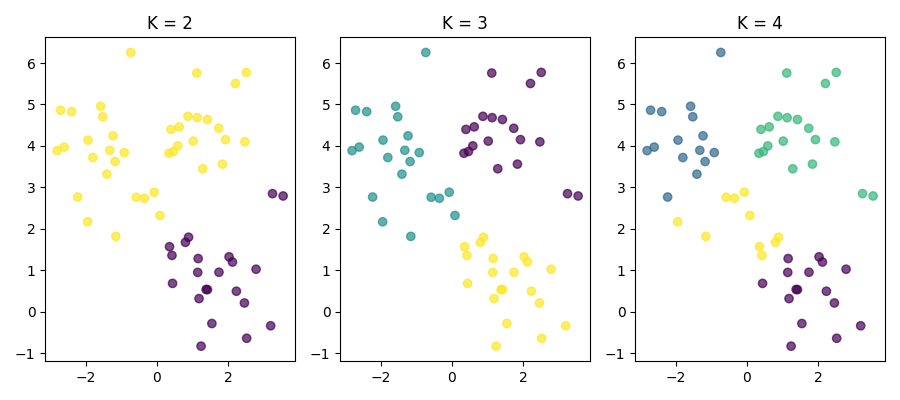
Figure 93: A simulated data set with 60 observations in two-dimensional space. Panels show the results of applying K-means clustering with different values of \(K\), the number of clusters. The color of each observation indicates the cluster to which it was assigned using the K-means clustering algorithm. Since there is no ordering of clusters, the cluster coloring is arbitrary. The cluster labels are the outputs of the clustering procedure.
Figure 94 shows the progression of the K-Means Clustering Algorithm on the toy example from figure 93.
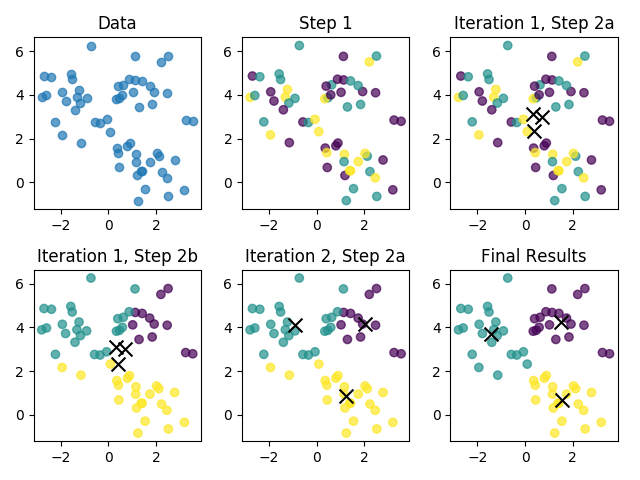
Figure 94: The progress of K-means algorithm on the example of figure 93 with \(K = 3\). Top left: The observations are shown. Top center: In Step 1 of the algorithm, each observation is randomly assigned to a cluster. Top right: In Step 2(a), the cluster centroids are computed. These are shown as \(\times\). Since the clusters were chosen at random, initially centroids are almost overlapping. Bottom left: In Step 2(b), each observation is assigned to the nearest centroid. Bottom center: Step 2(a) is once again performed, leading to new cluster centroids. Bottom right: The results obtained after five iterations.
Figure 95 shows the local optima obtained by running K-means clustering six times using six different initial cluster assignments, using toy data from figure 93.
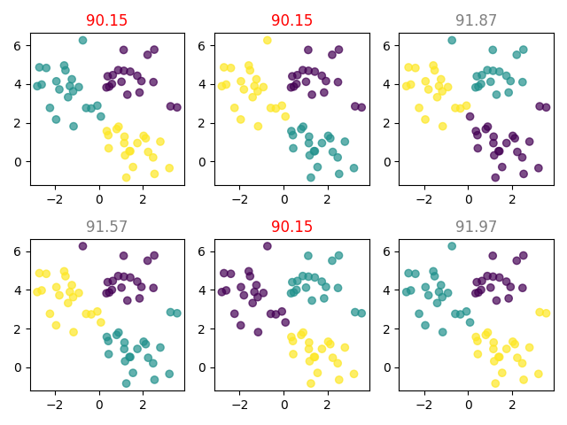
Figure 95: K-means clustering performed six times on the data from figure 93 with \(K = 3\), each time with a different random assignment of the observations in Step 1 of the K-means algorithm. Above each plot is the value of the objective (sum of squares of distances from centroids). Three different local optima were obtained, one of which resulted in a smaller value of the objective and provides better separation between the clusters. Those labeled in red all achieved the same best solution.
10.3.2 Hierarchical Clustering
We begin with the simulated data set shown in figure 96, consisting of 45 observations in two-dimensional space. The data were generated from a three-class model; the true class labels for each observation are shown in distinct colors. However, suppose the data were observed without class labels, and that we wanted to perform hierarchical clustering of the data. Hierarchical clustering yields the results shown in the left-hand panel of figure 97.
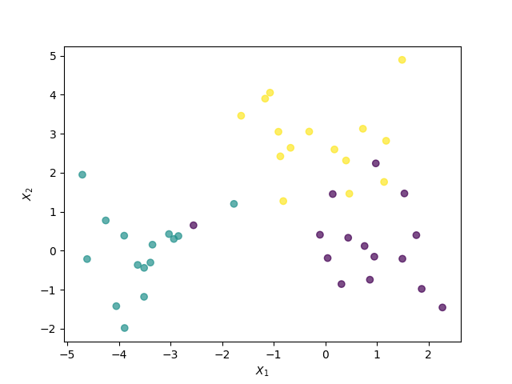
Figure 96: Forty five observations generated in two-dimensional space. In reality there are three distinct classes, shown in separate colors. However, we will treat these class labels as unknown. To discover the classes, we will seek to cluster the observations.
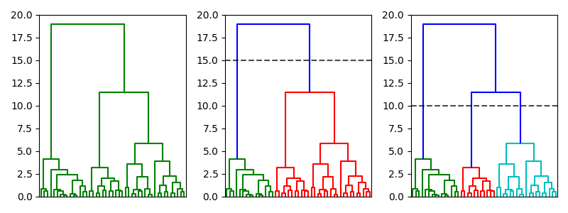
Figure 97: Left: Dendrogram obtained from hierarchically clustering the data from figure 96 with complete linkage and Euclidean distance. Center: Dendrogram from left-hand panel, cut at a height of 15 (indicated by dashed line). This cut results in two distinct clusters, shown in different colors. Right: Dendrogram from left-hand panel, now cut at a height of 10. This cut results in three distinct clusters, shown in different colors. The colors were not used in clustering, but are simply used for display purposes.
Footnotes:
The middle panel is from a different data set.